../human-review.json to verified_no_exceptions. Otherwise use verified_with_exceptions and record only the affected lines/tokens and their correction relation. Do not report OCR spelling issues as geometry errors. The JSON ledger is authoritative; this page does not write review state. Exception examples and field definitions are in README-human-review.md.54 lines · 198 resolved · 5 residual
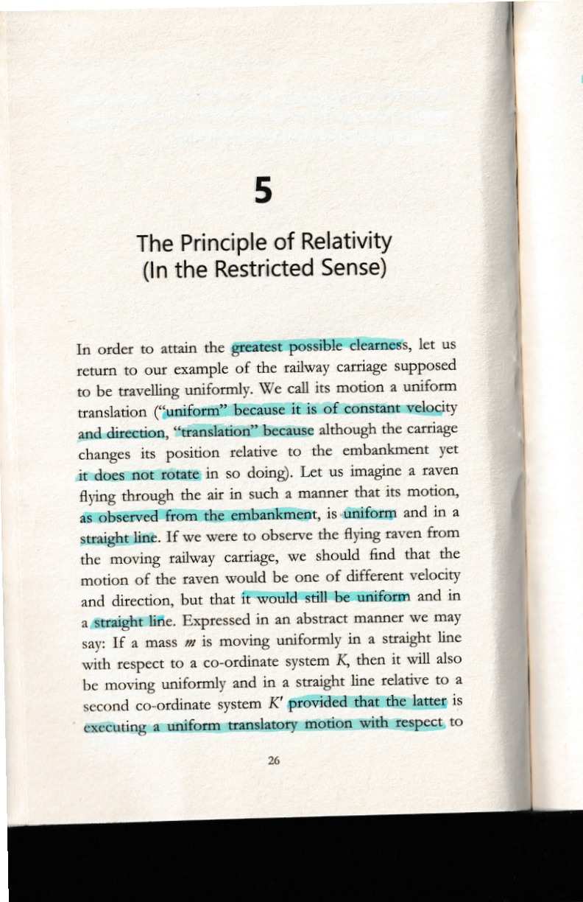
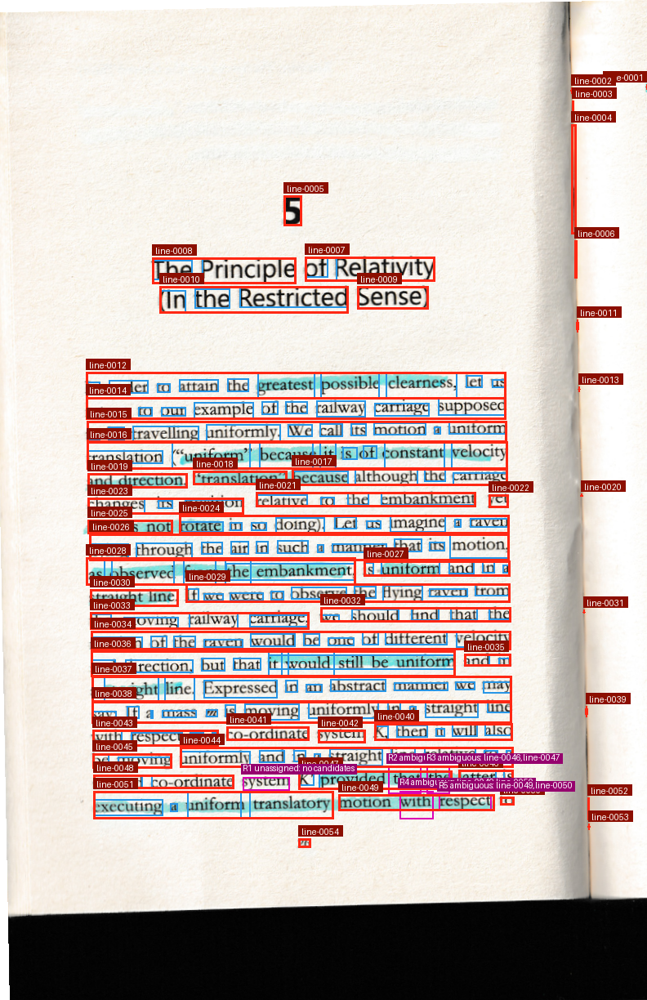
| physical_line_id | OCR locator text | Stable token identities and boxes (px) |
|---|---|---|
| line-0001 | . | row 6 / token-0006 [791,103,1,6] |
| line-0002 | | | row 5 / token-0005 [699,107,1,7] |
| line-0003 | | | row 8 / token-0008 [700,123,2,22] |
| line-0004 | | | row 11 / token-0011 [699,152,6,134] |
| line-0005 | 5 | row 10 / token-0010 [347,239,22,37] |
| line-0006 | | | row 17 / token-0017 [703,294,3,46] |
| line-0007 | of Relativity | row 15 / token-0015 [373,314,28,25], row 16 / token-0016 [411,314,121,30] |
| line-0008 | The Principle | row 13 / token-0013 [186,318,49,24], row 14 / token-0014 [247,315,115,32] |
| line-0009 | Sense) | row 22 / token-0022 [437,350,87,28] |
| line-0010 | (In the Restricted | row 19 / token-0019 [195,355,32,28], row 20 / token-0020 [238,353,43,24], row 21 / token-0021 [293,350,133,26] |
| line-0011 | | | row 24 / token-0024 [706,391,1,15] |
| line-0012 | In order to attain the greatest possible clearness, let us | row 26 / token-0026 [105,467,17,14], row 27 / token-0027 [133,465,48,16], row 28 / token-0028 [192,469,16,11], row 29 / token-0029 [219,464,48,15], row 30 / token-0030 [278,463,26,16], row 31 / token-0031 [315,455,70,33], row 32 / token-0032 [392,455,72,33], row 33 / token-0033 [472,455,87,33], row 34 / token-0034 [570,459,20,15], row 35 / token-0035 [602,464,17,10] |
| line-0013 | , | row 36 / token-0036 [708,473,1,6] |
| line-0014 | return to our example of the railway carriage supposed | row 38 / token-0038 [105,499,53,11], row 39 / token-0039 [169,498,17,11], row 40 / token-0040 [197,498,30,11], row 41 / token-0041 [237,492,73,21], row 42 / token-0042 [320,491,20,16], row 43 / token-0043 [349,491,27,15], row 44 / token-0044 [387,490,60,20], row 45 / token-0045 [458,493,67,16], row 46 / token-0046 [536,486,83,22] |
| line-0015 | to be travelling uniformly. We call its motion a uniform | row 48 / token-0048 [106,528,16,10], row 49 / token-0049 [132,522,20,16], row 50 / token-0050 [162,521,81,20], row 51 / token-0051 [252,519,91,21], row 52 / token-0052 [352,519,30,15], row 53 / token-0053 [391,518,28,16], row 54 / token-0054 [429,518,19,15], row 55 / token-0055 [457,517,64,15], row 56 / token-0056 [531,522,8,9], row 57 / token-0057 [549,515,71,16] |
| line-0016 | translation (“uniform” because it is of constant velocity | row 59 / token-0059 [106,551,93,16], row 60 / token-0060 [210,540,96,34], row 61 / token-0061 [317,540,66,34], row 62 / token-0062 [391,540,20,34], row 63 / token-0063 [419,547,18,15], row 64 / token-0064 [444,545,17,16], row 65 / token-0065 [470,540,74,34], row 66 / token-0066 [552,540,69,34] |
| line-0017 | because although the carriage | row 70 / token-0070 [357,576,69,17], row 71 / token-0071 [434,574,77,20], row 72 / token-0072 [519,573,26,16], row 73 / token-0073 [554,578,67,15] |
| line-0018 | “ttanislation’” | row 69 / token-0069 [236,576,115,17] |
| line-0019 | and-direction, | row 68 / token-0068 [107,579,122,18] |
| line-0020 | | | row 83 / token-0083 [711,604,1,3] |
| line-0021 | relative to the embankment | row 78 / token-0078 [313,605,63,15], row 79 / token-0079 [392,608,17,11], row 80 / token-0080 [425,603,26,15], row 81 / token-0081 [466,602,116,16] |
| line-0022 | yet | row 82 / token-0082 [598,605,24,16] |
| line-0023 | changes its position | row 75 / token-0075 [107,609,70,20], row 76 / token-0076 [193,612,18,10], row 77 / token-0077 [226,611,72,17] |
| line-0024 | rotate in so doing). Let us imagine a raven | row 86 / token-0086 [219,638,54,13], row 87 / token-0087 [281,639,15,10], row 88 / token-0088 [307,639,19,10], row 89 / token-0089 [337,633,60,20], row 90 / token-0090 [409,632,27,15], row 91 / token-0091 [448,637,18,10], row 92 / token-0092 [477,630,68,21], row 93 / token-0093 [556,635,8,10], row 94 / token-0094 [575,634,48,11] |
| line-0025 | it-does*nor | row 85 / token-0085 [107,636,104,17] |
| line-0026 | flying through the air in such a manner that its motion, | row 96 / token-0096 [109,665,48,21], row 97 / token-0097 [166,664,69,21], row 98 / token-0098 [246,663,26,15], row 99 / token-0099 [282,662,22,16], row 100 / token-0100 [313,662,15,15], row 101 / token-0101 [339,661,38,16], row 102 / token-0102 [388,666,8,10], row 103 / token-0103 [406,665,67,11], row 104 / token-0104 [482,659,34,16], row 105 / token-0105 [525,663,19,11], row 106 / token-0106 [550,653,73,30] |
| line-0027 | is uniform and in a | row 113 / token-0113 [445,688,12,16], row 114 / token-0114 [466,687,72,18], row 115 / token-0115 [549,686,31,16], row 116 / token-0116 [590,686,15,15], row 117 / token-0117 [615,691,9,10] |
| line-0028 | as observed from the embankment, | row 108 / token-0108 [105,682,23,34], row 109 / token-0109 [136,682,77,34], row 110 / token-0110 [224,682,40,34], row 111 / token-0111 [275,682,32,34], row 112 / token-0112 [276,689,159,21] |
| line-0029 | If we were to observe the flying raven from | row 120 / token-0120 [227,720,16,15], row 121 / token-0121 [249,726,24,9], row 122 / token-0122 [281,725,41,10], row 123 / token-0123 [331,723,16,11], row 124 / token-0124 [356,718,68,15], row 125 / token-0125 [433,717,27,15], row 126 / token-0126 [468,716,49,21], row 127 / token-0127 [525,720,47,10], row 128 / token-0128 [581,714,43,15] |
| line-0030 | straightline. | row 119 / token-0119 [110,721,108,21] |
| line-0031 | | | row 139 / token-0139 [714,746,1,4] |
| line-0032 | we should find that the | row 134 / token-0134 [392,752,23,9], row 135 / token-0135 [430,745,58,16], row 136 / token-0136 [503,744,34,15], row 137 / token-0137 [551,743,33,16], row 138 / token-0138 [598,743,27,15] |
| line-0033 | the moving railway carriage, | row 130 / token-0130 [110,751,26,15], row 131 / token-0131 [151,755,67,15], row 132 / token-0132 [231,749,60,20], row 133 / token-0133 [305,752,73,15] |
| line-0034 | motion of the raven would be one of different velocity | row 141 / token-0141 [111,779,63,16], row 142 / token-0142 [184,778,20,15], row 143 / token-0143 [212,778,27,15], row 144 / token-0144 [249,782,48,10], row 145 / token-0145 [306,775,55,16], row 146 / token-0146 [371,775,20,15], row 147 / token-0147 [401,780,32,10], row 148 / token-0148 [443,773,20,16], row 149 / token-0149 [471,773,76,16], row 150 / token-0150 [558,772,67,20] |
| line-0035 | and in | row 159 / token-0159 [568,800,31,15], row 160 / token-0160 [610,805,15,9] |
| line-0036 | and direction, but that it still"be“uniform would’ | row 152 / token-0152 [111,807,30,16], row 153 / token-0153 [153,807,83,16], row 154 / token-0154 [246,805,29,16], row 155 / token-0155 [285,805,34,15], row 156 / token-0156 [328,796,17,32], row 158 / token-0158 [328,801,229,18], row 157 / token-0157 [352,796,57,32] |
| line-0037 | a Straight lific. Expressed in an abstract manner we may | row 162 / token-0162 [112,842,7,9], row 163 / token-0163 [127,827,67,33], row 164 / token-0164 [201,827,37,33], row 165 / token-0165 [249,832,90,22], row 166 / token-0166 [349,832,15,15], row 167 / token-0167 [374,837,20,10], row 168 / token-0168 [404,831,68,15], row 169 / token-0169 [482,835,66,10], row 170 / token-0170 [557,834,24,10], row 171 / token-0171 [591,834,35,14] |
| line-0038 | say: If a mass m is moving uniformly in a straight line | row 173 / token-0173 [112,870,30,15], row 174 / token-0174 [155,864,15,15], row 175 / token-0175 [184,869,3,10], row 176 / token-0176 [198,869,42,9], row 177 / token-0177 [252,868,14,9], row 178 / token-0178 [275,862,13,15], row 179 / token-0179 [299,861,67,20], row 180 / token-0180 [377,859,86,20], row 181 / token-0181 [474,859,16,15], row 182 / token-0182 [501,864,8,9], row 183 / token-0183 [520,857,65,21], row 184 / token-0184 [596,857,30,15] |
| line-0039 | | | row 185 / token-0185 [717,864,1,13] |
| line-0040 | K, then it will also | row 193 / token-0193 [458,888,17,18], row 194 / token-0194 [485,887,38,15], row 195 / token-0195 [533,891,11,10], row 196 / token-0196 [553,885,31,16], row 197 / token-0197 [593,885,34,15] |
| line-0041 | co-ordinate | row 191 / token-0191 [277,889,101,17] |
| line-0042 | system | row 192 / token-0192 [389,893,58,16] |
| line-0043 | with respect to a | row 187 / token-0187 [113,893,36,15], row 188 / token-0188 [160,896,63,17], row 189 / token-0189 [232,896,17,11], row 190 / token-0190 [259,896,8,10] |
| line-0044 | uniformly and in a straight line relative to a | row 201 / token-0201 [220,919,86,20], row 202 / token-0202 [317,918,31,15], row 203 / token-0203 [359,918,15,14], row 204 / token-0204 [384,922,8,10], row 205 / token-0205 [403,916,65,21], row 206 / token-0206 [478,915,30,16], row 207 / token-0207 [519,914,63,16], row 208 / token-0208 [592,918,17,11], row 209 / token-0209 [619,918,9,10] |
| line-0045 | be moving | row 199 / token-0199 [113,922,20,15], row 200 / token-0200 [144,926,66,14] |
| line-0046 | latter is | row 218 / token-0218 [561,942,46,20], row 219 / token-0219 [616,942,12,15] |
| line-0047 | K’ provided | row 214 / token-0214 [365,945,19,16], row 215 / token-0215 [390,943,163,23] |
| line-0048 | second co-ordinate | row 211 / token-0211 [114,949,60,16], row 212 / token-0212 [185,948,101,16] |
| line-0049 | motion | row 225 / token-0225 [414,972,191,20] |
| line-0050 | to | row 228 / token-0228 [612,975,17,10] |
| line-0051 | executing a uniform translatory | row 221 / token-0221 [114,978,85,20], row 222 / token-0222 [208,983,9,10], row 223 / token-0223 [229,968,66,34], row 224 / token-0224 [305,968,103,34] |
| line-0052 | | | row 229 / token-0229 [719,976,2,27] |
| line-0053 | | | row 232 / token-0232 [720,1008,1,7] |
| line-0054 | 26 | row 231 / token-0231 [365,1026,15,11] |
| Overlay | Token ID | Source row | OCR locator | State | Candidate lines |
|---|---|---|---|---|---|
| R1 | token-0213 | source row 213 | system | unassigned | none |
| R2 | token-0216 | source row 216 | that | ambiguous | line-0046, line-0047 |
| R3 | token-0217 | source row 217 | the | ambiguous | line-0046, line-0047 |
| R4 | token-0226 | source row 226 | with | ambiguous | line-0049, line-0050 |
| R5 | token-0227 | source row 227 | respect | ambiguous | line-0049, line-0050 |
72 lines · 279 resolved · 1 residual
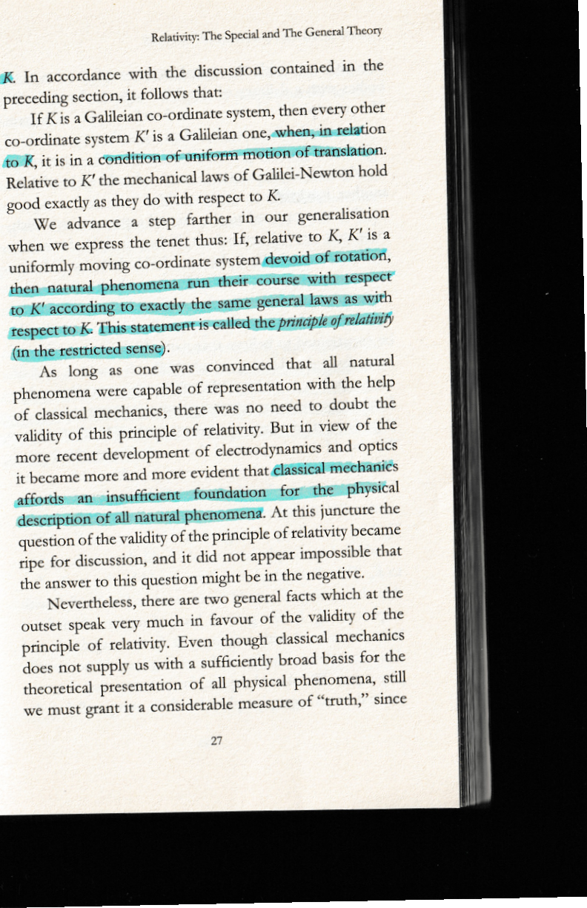
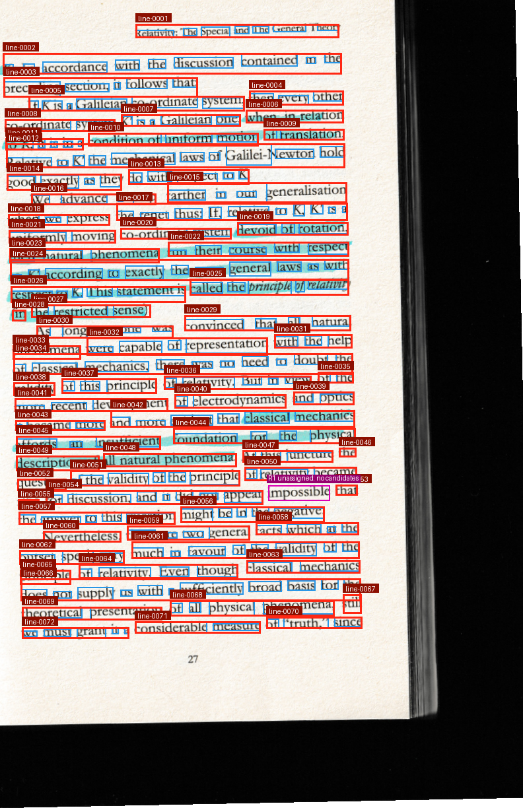
| physical_line_id | OCR locator text | Stable token identities and boxes (px) |
|---|---|---|
| line-0001 | Relativity: The Special and The General Theory | row 5 / token-0005 [205,45,58,11], row 6 / token-0006 [277,42,21,12], row 7 / token-0007 [304,40,44,17], row 8 / token-0008 [355,39,22,12], row 9 / token-0009 [382,39,25,11], row 10 / token-0010 [413,36,50,12], row 11 / token-0011 [480,36,33,10] |
| line-0002 | K. In accordance with the discussion contained in the | row 13 / token-0013 [4,97,16,15], row 14 / token-0014 [35,96,17,15], row 15 / token-0015 [64,93,98,17], row 16 / token-0016 [174,90,37,16], row 17 / token-0017 [224,89,27,15], row 18 / token-0018 [263,86,90,17], row 19 / token-0019 [365,81,85,19], row 20 / token-0020 [463,86,15,10], row 21 / token-0021 [491,80,26,15] |
| line-0003 | preceding section, it follows that: | row 23 / token-0023 [5,123,86,24], row 24 / token-0024 [98,126,67,13], row 25 / token-0025 [172,124,10,11], row 26 / token-0026 [191,118,62,16], row 27 / token-0027 [261,117,38,15] |
| line-0004 | then every other | row 36 / token-0036 [377,141,37,15], row 37 / token-0037 [421,144,46,15], row 38 / token-0038 [474,137,46,16] |
| line-0005 | If Kis a Galileian co-ordinate system, | row 30 / token-0030 [43,152,15,16], row 31 / token-0031 [63,152,31,15], row 32 / token-0032 [101,156,8,10], row 33 / token-0033 [115,149,77,16], row 34 / token-0034 [199,145,100,18], row 35 / token-0035 [306,147,64,17] |
| line-0006 | when;in-telation | row 47 / token-0047 [372,166,148,20] |
| line-0007 | K' is a Galileian one, | row 42 / token-0042 [183,175,17,16], row 43 / token-0043 [207,181,12,9], row 44 / token-0044 [227,181,7,9], row 45 / token-0045 [243,173,77,16], row 46 / token-0046 [327,176,37,12] |
| line-0008 | co-ordinate system | row 40 / token-0040 [7,180,100,17], row 41 / token-0041 [115,182,59,17] |
| line-0009 | of translation. | row 57 / token-0057 [399,196,20,16], row 58 / token-0058 [424,195,97,16] |
| line-0010 | condition’of uniform motion | row 54 / token-0054 [133,202,111,19], row 55 / token-0055 [250,201,71,16], row 56 / token-0056 [328,203,63,12] |
| line-0011 | £6, it is in a | row 49 / token-0049 [8,210,42,17], row 50 / token-0050 [57,209,11,15], row 51 / token-0051 [76,214,11,9], row 52 / token-0052 [95,213,15,10], row 53 / token-0053 [118,213,8,9] |
| line-0012 | Relative to K’ the mechanical laws of Galilei- Newton hold | row 60 / token-0060 [9,238,69,16], row 61 / token-0061 [86,242,17,9], row 62 / token-0062 [110,235,18,16], row 63 / token-0063 [134,235,26,15], row 64 / token-0064 [168,231,97,18], row 65 / token-0065 [272,230,37,15], row 66 / token-0066 [316,230,17,13], row 67 / token-0067 [342,217,69,33], row 68 / token-0068 [416,225,59,15], row 69 / token-0069 [484,221,38,17] |
| line-0013 | do with respect to K. | row 75 / token-0075 [194,261,21,15], row 76 / token-0076 [223,259,37,16], row 77 / token-0077 [268,262,61,17], row 78 / token-0078 [337,261,17,10], row 79 / token-0079 [361,256,16,15] |
| line-0014 | good exactly as they | row 71 / token-0071 [10,266,44,22], row 72 / token-0072 [61,265,58,20], row 73 / token-0073 [127,270,16,9], row 74 / token-0074 [151,263,33,20] |
| line-0015 | farther in our generalisation | row 86 / token-0086 [253,287,58,16], row 87 / token-0087 [327,290,15,10], row 88 / token-0088 [358,289,30,10], row 89 / token-0089 [403,276,122,31] |
| line-0016 | We advance a step | row 82 / token-0082 [47,295,28,15], row 83 / token-0083 [92,293,70,15], row 84 / token-0084 [178,296,8,9], row 85 / token-0085 [201,294,35,16] |
| line-0017 | the tenet thus: If, relative to K, K' is a | row 94 / token-0094 [176,319,26,15], row 95 / token-0095 [212,321,43,12], row 96 / token-0096 [264,315,42,16], row 97 / token-0097 [316,313,19,18], row 98 / token-0098 [345,312,62,16], row 99 / token-0099 [417,315,17,10], row 100 / token-0100 [444,309,17,18], row 101 / token-0101 [470,307,19,17], row 102 / token-0102 [497,313,11,10], row 103 / token-0103 [518,312,8,10] |
| line-0018 | when we express | row 91 / token-0091 [12,324,47,15], row 92 / token-0092 [68,328,24,9], row 93 / token-0093 [101,325,65,16] |
| line-0019 | devoid of rotation, | row 109 / token-0109 [359,339,59,17], row 110 / token-0110 [426,338,20,16], row 111 / token-0111 [452,336,75,18] |
| line-0020 | co-ordinate system | row 107 / token-0107 [182,345,101,17], row 108 / token-0108 [292,347,58,11] |
| line-0021 | uniformly moving | row 105 / token-0105 [13,351,87,17], row 106 / token-0106 [108,348,67,20] |
| line-0022 | run their course with respect | row 116 / token-0116 [254,378,28,10], row 117 / token-0117 [295,371,40,16], row 118 / token-0118 [347,374,56,11], row 119 / token-0119 [415,366,38,16], row 120 / token-0120 [466,368,62,17] |
| line-0023 | then natural phenomena | row 113 / token-0113 [14,381,38,15], row 114 / token-0114 [65,378,60,16], row 115 / token-0115 [137,376,104,22] |
| line-0024 | to K' according to exactly the same general laws as with | row 123 / token-0123 [15,415,17,10], row 124 / token-0124 [42,408,18,16], row 125 / token-0125 [68,406,87,19], row 126 / token-0126 [163,409,17,11], row 127 / token-0127 [189,402,58,21], row 128 / token-0128 [259,401,26,15], row 129 / token-0129 [295,404,43,11], row 130 / token-0130 [347,396,63,22], row 131 / token-0131 [419,396,37,15], row 132 / token-0132 [466,399,16,10], row 133 / token-0133 [491,392,37,16] |
| line-0025 | called the principle of relativity | row 140 / token-0140 [287,427,50,17], row 141 / token-0141 [344,427,27,15], row 142 / token-0142 [375,424,66,23], row 143 / token-0143 [447,424,14,18], row 144 / token-0144 [466,422,62,16] |
| line-0026 | respect to K. This statements | row 135 / token-0135 [16,440,63,18], row 136 / token-0136 [85,440,17,11], row 137 / token-0137 [109,435,16,15], row 138 / token-0138 [131,433,39,16], row 139 / token-0139 [177,434,104,14] |
| line-0027 | the restricted sense). | row 147 / token-0147 [47,465,26,16], row 148 / token-0148 [81,461,82,19], row 149 / token-0149 [171,462,57,18] |
| line-0028 | (in | row 146 / token-0146 [18,469,21,17] |
| line-0029 | convinced that all natural | row 157 / token-0157 [279,483,90,18], row 158 / token-0158 [386,482,32,15], row 159 / token-0159 [436,480,18,16], row 160 / token-0160 [472,477,59,17] |
| line-0030 | ‘As long as one was | row 152 / token-0152 [55,493,21,15], row 153 / token-0153 [94,493,38,19], row 154 / token-0154 [148,496,16,9], row 155 / token-0155 [182,495,31,9], row 156 / token-0156 [230,493,32,9] |
| line-0031 | with the help | row 167 / token-0167 [415,509,36,16], row 168 / token-0168 [461,508,26,15], row 169 / token-0169 [496,506,37,21] |
| line-0032 | were capable of representation | row 163 / token-0163 [131,524,40,10], row 164 / token-0164 [180,516,65,22], row 165 / token-0165 [254,515,20,15], row 166 / token-0166 [281,511,124,24] |
| line-0033 | phenomena | row 162 / token-0162 [19,523,103,21] |
| line-0034 | of classical mechanics, there was no need to doubt the | row 171 / token-0171 [20,551,19,16], row 172 / token-0172 [48,549,69,17], row 173 / token-0173 [128,547,97,16], row 174 / token-0174 [236,544,43,16], row 175 / token-0175 [290,547,32,11], row 176 / token-0176 [333,546,22,10], row 177 / token-0177 [366,539,40,16], row 178 / token-0178 [418,543,16,10], row 179 / token-0179 [445,536,51,16], row 180 / token-0180 [508,535,26,15] |
| line-0035 | of the | row 191 / token-0191 [481,564,19,16], row 192 / token-0192 [509,563,26,16] |
| line-0036 | of relativity. But in view | row 186 / token-0186 [248,572,19,15], row 187 / token-0187 [276,571,79,19], row 188 / token-0188 [367,569,29,14], row 189 / token-0189 [406,572,15,10], row 190 / token-0190 [431,571,40,10] |
| line-0037 | of this principle | row 183 / token-0183 [93,577,20,15], row 184 / token-0184 [121,577,30,15], row 185 / token-0185 [161,573,76,23] |
| line-0038 | validity | row 182 / token-0182 [20,579,63,20] |
| line-0039 | and optics | row 199 / token-0199 [444,593,30,16], row 200 / token-0200 [484,596,52,17] |
| line-0040 | of electrodynamics | row 197 / token-0197 [264,599,20,16], row 198 / token-0198 [292,597,141,21] |
| line-0041 | more recent development | row 194 / token-0194 [22,613,45,10], row 195 / token-0195 [77,609,54,13], row 196 / token-0196 [140,603,114,20] |
| line-0042 | and more evident that elassical mechanics | row 205 / token-0205 [167,631,30,16], row 206 / token-0206 [206,636,44,10], row 207 / token-0207 [258,628,64,16], row 208 / token-0208 [329,626,33,15], row 209 / token-0209 [370,623,68,18], row 210 / token-0210 [446,621,91,17] |
| line-0043 | it became more | row 202 / token-0202 [23,642,10,10], row 203 / token-0203 [40,636,66,15], row 204 / token-0204 [114,639,45,10] |
| line-0044 | foundation for the physical | row 215 / token-0215 [262,656,97,16], row 216 / token-0216 [379,653,25,15], row 217 / token-0217 [423,652,26,15], row 218 / token-0218 [469,648,69,23] |
| line-0045 | affords an. insufficient | row 212 / token-0212 [24,664,62,17], row 213 / token-0213 [105,668,20,10], row 214 / token-0214 [145,660,98,17] |
| line-0046 | the | row 225 / token-0225 [513,678,26,14] |
| line-0047 | At this juncture | row 222 / token-0222 [367,683,20,14], row 223 / token-0223 [395,682,30,15], row 224 / token-0224 [434,684,70,16] |
| line-0048 | all’naturalphenomena. | row 221 / token-0221 [156,686,202,21] |
| line-0049 | description’of | row 220 / token-0220 [24,690,126,23] |
| line-0050 | of relativity became | row 234 / token-0234 [370,710,19,15], row 235 / token-0235 [394,710,72,18], row 236 / token-0236 [475,707,65,15] |
| line-0051 | of the validity of the principle | row 228 / token-0228 [106,725,10,9], row 229 / token-0229 [119,719,37,15], row 230 / token-0230 [163,716,62,20], row 231 / token-0231 [231,715,19,16], row 232 / token-0232 [255,715,26,15], row 233 / token-0233 [287,712,76,22] |
| line-0052 | question | row 227 / token-0227 [26,725,74,18] |
| line-0053 | that | row 247 / token-0247 [508,734,33,16] |
| line-0054 | for discussion, and it did not appear | row 239 / token-0239 [69,749,25,15], row 240 / token-0240 [102,748,96,15], row 241 / token-0241 [207,744,30,16], row 242 / token-0242 [246,748,11,10], row 243 / token-0243 [266,742,26,16], row 244 / token-0244 [302,746,28,11], row 245 / token-0245 [339,744,59,17] |
| line-0055 | ripe | row 238 / token-0238 [27,756,32,15] |
| line-0056 | might be in the negative. | row 254 / token-0254 [273,770,49,21], row 255 / token-0255 [330,769,21,15], row 256 / token-0256 [358,768,15,15], row 257 / token-0257 [381,767,26,15], row 258 / token-0258 [415,769,76,16] |
| line-0057 | the answer to this question | row 249 / token-0249 [28,779,26,15], row 250 / token-0250 [62,782,60,11], row 251 / token-0251 [129,780,17,11], row 252 / token-0252 [154,775,30,15], row 253 / token-0253 [191,777,74,17] |
| line-0058 | facts which at the | row 266 / token-0266 [387,795,39,15], row 267 / token-0267 [434,793,52,16], row 268 / token-0268 [495,797,13,10], row 269 / token-0269 [517,791,26,15] |
| line-0059 | there are two general | row 262 / token-0262 [192,802,43,15], row 263 / token-0263 [243,806,25,9], row 264 / token-0264 [277,804,31,10], row 265 / token-0265 [316,796,62,22] |
| line-0060 | Nevertheless, | row 261 / token-0261 [65,804,118,17] |
| line-0061 | much in favour of the validity of the | row 274 / token-0274 [199,829,48,17], row 275 / token-0275 [258,834,15,9], row 276 / token-0276 [285,827,56,15], row 277 / token-0277 [352,825,19,15], row 278 / token-0278 [380,824,26,15], row 279 / token-0279 [417,822,62,20], row 280 / token-0280 [490,820,19,16], row 281 / token-0281 [518,820,26,15] |
| line-0062 | outset speak very | row 271 / token-0271 [29,839,54,12], row 272 / token-0272 [94,833,47,22], row 273 / token-0273 [151,837,37,15] |
| line-0063 | classical mechanics | row 288 / token-0288 [373,851,69,17], row 289 / token-0289 [454,848,91,17] |
| line-0064 | of relativity. Even though | row 284 / token-0284 [119,861,20,15], row 285 / token-0285 [149,859,79,17], row 286 / token-0286 [242,858,44,15], row 287 / token-0287 [298,854,62,20] |
| line-0065 | principle | row 283 / token-0283 [30,863,77,22] |
| line-0066 | does not supply us with a sufficiently broad basis for the | row 291 / token-0291 [31,892,40,16], row 292 / token-0292 [80,895,28,11], row 293 / token-0293 [117,889,54,21], row 294 / token-0294 [182,893,18,10], row 295 / token-0295 [208,886,38,16], row 296 / token-0296 [255,891,8,10], row 297 / token-0297 [272,882,96,18], row 298 / token-0298 [376,880,50,16], row 299 / token-0299 [435,879,42,15], row 300 / token-0300 [486,877,26,16], row 301 / token-0301 [520,876,26,16] |
| line-0067 | still | row 309 / token-0309 [519,900,28,29] |
| line-0068 | of all physical phenomena, | row 305 / token-0305 [257,913,19,15], row 306 / token-0306 [286,912,18,16], row 307 / token-0307 [316,910,69,23], row 308 / token-0308 [398,909,108,21] |
| line-0069 | theoretical presentation | row 303 / token-0303 [33,919,91,17], row 304 / token-0304 [136,920,109,19] |
| line-0070 | of “truth,” since | row 318 / token-0318 [403,937,19,15], row 319 / token-0319 [429,935,68,17], row 320 / token-0320 [506,934,42,15] |
| line-0071 | considerable measure | row 316 / token-0316 [204,941,109,18], row 317 / token-0317 [322,944,72,11] |
| line-0072 | we must grant it a | row 311 / token-0311 [33,955,23,9], row 312 / token-0312 [66,952,41,12], row 313 / token-0313 [116,950,44,17], row 314 / token-0314 [169,950,10,10], row 315 / token-0315 [188,950,7,10] |
| Overlay | Token ID | Source row | OCR locator | State | Candidate lines |
|---|---|---|---|---|---|
| R1 | token-0246 | source row 246 | impossible | unassigned | none |
37 lines · 142 resolved · 0 residual
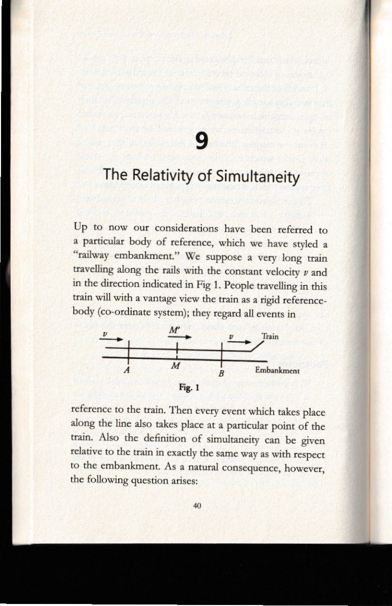
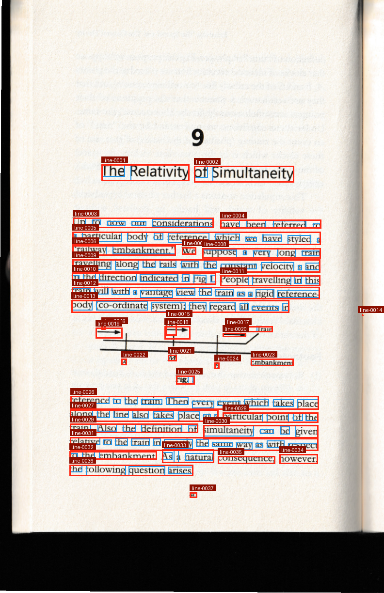
| physical_line_id | OCR locator text | Stable token identities and boxes (px) |
|---|---|---|
| line-0001 | The Relativity | row 5 / token-0005 [209,339,48,25], row 6 / token-0006 [269,340,121,33] |
| line-0002 | of Simultaneity | row 7 / token-0007 [400,342,28,24], row 8 / token-0008 [438,343,168,33] |
| line-0003 | Up to now our considerations | row 10 / token-0010 [150,449,26,21], row 11 / token-0011 [190,453,17,11], row 12 / token-0012 [221,456,37,9], row 13 / token-0013 [271,456,30,10], row 14 / token-0014 [314,452,126,16] |
| line-0004 | have been referred to | row 15 / token-0015 [454,453,40,16], row 16 / token-0016 [508,454,40,16], row 17 / token-0017 [563,455,68,16], row 18 / token-0018 [645,461,17,10] |
| line-0005 | a particular body of reference, which we have styled a | row 20 / token-0020 [149,483,8,9], row 21 / token-0021 [169,478,82,20], row 22 / token-0022 [262,479,40,20], row 23 / token-0023 [317,480,19,15], row 24 / token-0024 [346,480,85,20], row 25 / token-0025 [443,482,51,15], row 26 / token-0026 [506,489,23,9], row 27 / token-0027 [541,484,40,15], row 28 / token-0028 [593,485,48,20], row 29 / token-0029 [654,491,7,9] |
| line-0006 | “railway embankment.” | row 31 / token-0031 [149,506,70,21], row 32 / token-0032 [232,507,130,17] |
| line-0007 | We | row 33 / token-0033 [375,510,29,15] |
| line-0008 | suppose a very long train | row 34 / token-0034 [417,515,71,16], row 35 / token-0035 [501,517,8,9], row 36 / token-0036 [522,517,33,15], row 37 / token-0037 [571,512,39,21], row 38 / token-0038 [622,517,39,11] |
| line-0009 | travelling along the rails with the constant velocity » and | row 40 / token-0040 [149,535,80,21], row 41 / token-0041 [237,536,48,21], row 42 / token-0042 [294,536,26,16], row 43 / token-0043 [329,537,34,15], row 44 / token-0044 [373,538,37,15], row 45 / token-0045 [420,538,26,16], row 46 / token-0046 [455,544,74,11], row 47 / token-0047 [538,541,68,21], row 48 / token-0048 [614,547,8,10], row 49 / token-0049 [630,542,30,15] |
| line-0010 | in the direction indicated in Fig 1. | row 51 / token-0051 [148,568,15,10], row 52 / token-0052 [171,563,26,15], row 53 / token-0053 [204,563,78,17], row 54 / token-0054 [288,565,79,16], row 55 / token-0055 [375,566,15,15], row 56 / token-0056 [399,567,26,20], row 57 / token-0057 [434,567,11,15] |
| line-0011 | People travelling in this | row 58 / token-0058 [454,568,59,21], row 59 / token-0059 [520,569,80,21], row 60 / token-0060 [607,570,15,15], row 61 / token-0061 [630,570,30,16] |
| line-0012 | train will with a vantage view the train as a tigid reference- | row 63 / token-0063 [148,595,38,11], row 64 / token-0064 [194,592,29,15], row 65 / token-0065 [230,593,37,15], row 66 / token-0066 [275,599,7,9], row 67 / token-0067 [289,598,67,16], row 68 / token-0068 [363,595,39,15], row 69 / token-0069 [410,595,26,15], row 70 / token-0070 [443,596,38,15], row 71 / token-0071 [489,602,16,9], row 72 / token-0072 [512,602,8,10], row 73 / token-0073 [527,597,38,20], row 74 / token-0074 [572,598,87,16] |
| line-0013 | body (co-ordinate system); they regard all events in | row 76 / token-0076 [147,619,43,21], row 77 / token-0077 [198,621,106,19], row 78 / token-0078 [312,624,70,19], row 79 / token-0079 [390,623,35,21], row 80 / token-0080 [432,624,54,21], row 81 / token-0081 [494,625,18,15], row 82 / token-0082 [519,631,55,10], row 83 / token-0083 [582,626,14,15] |
| line-0014 | | | row 84 / token-0084 [747,648,1,3] |
| line-0015 | ail | row 87 / token-0087 [342,656,22,36] |
| line-0016 | v | row 86 / token-0086 [209,671,8,9] |
| line-0017 | v Train | row 88 / token-0088 [464,676,7,9], row 89 / token-0089 [529,673,33,12] |
| line-0018 | ed | row 92 / token-0092 [339,673,53,27] |
| line-0019 | ——e | row 91 / token-0091 [197,676,55,22] |
| line-0020 | _— | row 93 / token-0093 [459,687,48,8] |
| line-0021 | M | row 96 / token-0096 [346,732,18,13] |
| line-0022 | A | row 95 / token-0095 [250,740,11,13] |
| line-0023 | Embankment | row 98 / token-0098 [517,740,88,15] |
| line-0024 | B | row 97 / token-0097 [442,748,10,13] |
| line-0025 | Fig. 1 | row 100 / token-0100 [363,775,25,18], row 101 / token-0101 [397,776,4,13] |
| line-0026 | reference to the train. Then every event which takes place | row 103 / token-0103 [145,817,80,16], row 104 / token-0104 [233,823,16,10], row 105 / token-0105 [257,818,26,16], row 106 / token-0106 [291,823,43,12], row 107 / token-0107 [342,820,46,15], row 108 / token-0108 [396,827,45,15], row 109 / token-0109 [448,827,47,10], row 110 / token-0110 [503,823,51,15], row 111 / token-0111 [563,824,42,15], row 112 / token-0112 [613,824,44,21] |
| line-0027 | along the line also takes place at a | row 114 / token-0114 [144,845,47,21], row 115 / token-0115 [200,846,26,16], row 116 / token-0116 [234,847,31,15], row 117 / token-0117 [273,847,33,16], row 118 / token-0118 [316,848,42,16], row 119 / token-0119 [367,849,44,21], row 120 / token-0120 [419,854,15,11], row 121 / token-0121 [442,855,8,10] |
| line-0028 | particular point of the | row 122 / token-0122 [459,851,82,20], row 123 / token-0123 [550,852,45,20], row 124 / token-0124 [604,852,20,16], row 125 / token-0125 [630,853,26,15] |
| line-0029 | train. Also the definition of | row 127 / token-0127 [144,874,43,16], row 128 / token-0128 [201,875,39,15], row 129 / token-0129 [253,875,26,16], row 130 / token-0130 [291,876,84,17], row 131 / token-0131 [388,878,20,15] |
| line-0030 | simultaneity can be given | row 132 / token-0132 [419,878,104,22], row 133 / token-0133 [536,886,28,9], row 134 / token-0134 [578,880,19,16], row 135 / token-0135 [609,877,47,29] |
| line-0031 | relative to the train in exactly the same way as with respect | row 137 / token-0137 [144,902,62,16], row 138 / token-0138 [213,907,17,11], row 139 / token-0139 [237,904,26,15], row 140 / token-0140 [270,905,38,15], row 141 / token-0141 [316,905,15,15], row 142 / token-0142 [338,906,59,20], row 143 / token-0143 [404,906,26,16], row 144 / token-0144 [437,912,43,10], row 145 / token-0145 [487,913,33,15], row 146 / token-0146 [527,914,15,9], row 147 / token-0147 [550,909,36,15], row 148 / token-0148 [594,915,62,15] |
| line-0032 | to the embankment. | row 150 / token-0150 [143,935,17,10], row 151 / token-0151 [169,931,26,15], row 152 / token-0152 [204,932,119,16] |
| line-0033 | As a natural | row 153 / token-0153 [334,933,21,16], row 154 / token-0154 [358,927,10,28], row 155 / token-0155 [382,935,59,15] |
| line-0034 | however, | row 157 / token-0157 [576,937,79,20] |
| line-0035 | consequence, | row 156 / token-0156 [449,941,118,16] |
| line-0036 | the following question arises: | row 159 / token-0159 [143,959,26,15], row 160 / token-0160 [177,959,82,23], row 161 / token-0161 [265,962,75,20], row 162 / token-0162 [347,963,51,15] |
| line-0037 | 40 | row 164 / token-0164 [391,1016,15,11] |
| Overlay | Token ID | Source row | OCR locator | State | Candidate lines |
|---|---|---|---|---|---|
| No residual tokens. | |||||
69 lines · 330 resolved · 1 residual
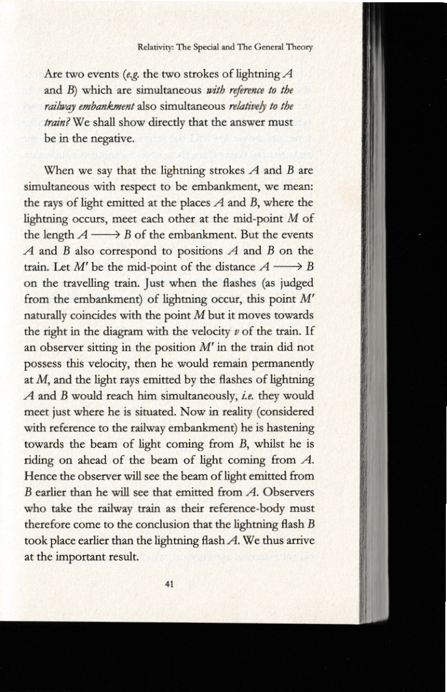
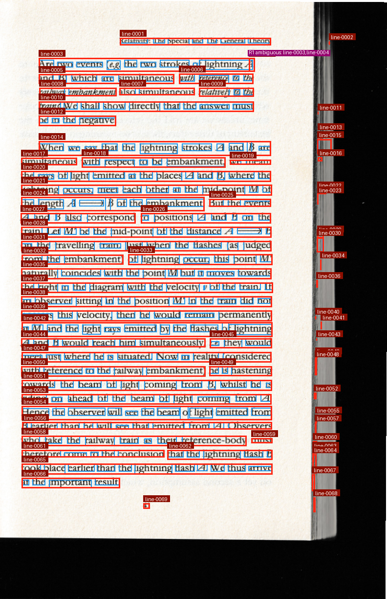
| physical_line_id | OCR locator text | Stable token identities and boxes (px) |
|---|---|---|
| line-0001 | Relativity: The Special and The General Theory | row 5 / token-0005 [245,77,57,11], row 6 / token-0006 [313,77,24,11], row 7 / token-0007 [343,77,44,15], row 8 / token-0008 [393,77,22,11], row 9 / token-0009 [424,77,19,11], row 10 / token-0010 [451,77,50,11], row 11 / token-0011 [507,77,47,11] |
| line-0002 | i | row 12 / token-0012 [673,84,1,7] |
| line-0003 | Are two events (¢,g, the two strokes of lightning | row 14 / token-0014 [79,122,31,15], row 15 / token-0015 [117,126,32,11], row 16 / token-0016 [156,126,54,11], row 17 / token-0017 [218,123,28,19], row 18 / token-0018 [254,122,26,15], row 19 / token-0019 [287,126,32,11], row 20 / token-0020 [327,122,60,15], row 21 / token-0021 [395,128,9,9], row 22 / token-0022 [407,122,110,20] |
| line-0004 | ||
| line-0005 | and B) which are simultaneous | row 25 / token-0025 [79,151,30,15], row 26 / token-0026 [120,151,16,20], row 27 / token-0027 [146,151,52,15], row 28 / token-0028 [208,156,24,10], row 29 / token-0029 [242,151,114,15] |
| line-0006 | with reference to the | row 30 / token-0030 [366,151,32,15], row 31 / token-0031 [407,153,61,18], row 32 / token-0032 [476,154,13,11], row 33 / token-0033 [498,150,20,15] |
| line-0007 | also simultaneous | row 37 / token-0037 [244,179,33,15], row 38 / token-0038 [284,179,114,15] |
| line-0008 | railway embankment | row 35 / token-0035 [80,179,52,17], row 36 / token-0036 [140,179,98,16] |
| line-0009 | relatively to the | row 39 / token-0039 [407,179,62,18], row 40 / token-0040 [478,182,13,12], row 41 / token-0041 [498,179,21,15] |
| line-0010 | train? We shall show directly that the answer must | row 43 / token-0043 [79,208,45,15], row 44 / token-0044 [130,208,28,15], row 45 / token-0045 [165,207,38,16], row 46 / token-0046 [211,208,45,15], row 47 / token-0047 [264,207,63,21], row 48 / token-0048 [335,208,33,15], row 49 / token-0049 [375,207,26,16], row 50 / token-0050 [408,213,61,10], row 51 / token-0051 [476,212,43,11] |
| line-0011 | | | row 57 / token-0057 [650,228,1,5] |
| line-0012 | be in the negative. | row 53 / token-0053 [79,236,19,15], row 54 / token-0054 [106,241,15,10], row 55 / token-0055 [129,236,25,15], row 56 / token-0056 [162,240,75,17] |
| line-0013 | i | row 59 / token-0059 [650,268,9,14] |
| line-0014 | When we say that the lightning strokes A and B are | row 61 / token-0061 [79,293,51,15], row 62 / token-0062 [140,299,23,9], row 63 / token-0063 [173,299,23,14], row 64 / token-0064 [208,293,32,15], row 65 / token-0065 [250,293,26,15], row 66 / token-0066 [286,293,77,21], row 67 / token-0067 [372,293,61,15], row 68 / token-0068 [443,293,15,15], row 69 / token-0069 [468,292,30,16], row 70 / token-0070 [505,288,10,30], row 71 / token-0071 [529,298,25,9] |
| line-0015 | | | | row 72 / token-0072 [649,284,3,30], row 73 / token-0073 [677,295,1,17] |
| line-0016 | |) | row 83 / token-0083 [650,321,9,8] |
| line-0017 | simultaneous | row 75 / token-0075 [43,322,114,15] |
| line-0018 | with respect to be embankment, | row 76 / token-0076 [167,322,37,15], row 77 / token-0077 [214,326,61,16], row 78 / token-0078 [285,326,17,11], row 79 / token-0079 [311,321,20,16], row 80 / token-0080 [341,321,120,19] |
| line-0019 | we mean: | row 81 / token-0081 [470,327,23,9], row 82 / token-0082 [503,326,51,10] |
| line-0020 | the rays of light emitted at the places A and B, where the | row 85 / token-0085 [43,350,26,15], row 86 / token-0086 [78,356,32,10], row 87 / token-0087 [119,350,19,15], row 88 / token-0088 [144,350,38,20], row 89 / token-0089 [190,350,65,15], row 90 / token-0090 [263,355,14,10], row 91 / token-0091 [286,350,26,15], row 92 / token-0092 [320,350,52,21], row 93 / token-0093 [379,350,17,15], row 94 / token-0094 [404,349,31,16], row 95 / token-0095 [444,350,16,17], row 96 / token-0096 [468,350,52,15], row 97 / token-0097 [528,349,26,16] |
| line-0021 | lightning occurs, meet each other at the mid-point M of | row 99 / token-0099 [43,378,77,20], row 100 / token-0100 [129,384,61,12], row 101 / token-0101 [200,383,41,11], row 102 / token-0102 [251,378,38,16], row 103 / token-0103 [299,378,46,16], row 104 / token-0104 [354,383,15,10], row 105 / token-0105 [378,378,26,15], row 106 / token-0106 [414,378,87,21], row 107 / token-0107 [510,378,18,15], row 108 / token-0108 [537,377,19,16] |
| line-0022 | a | row 109 / token-0109 [649,387,18,9] |
| line-0023 | f | row 122 / token-0122 [649,397,2,20] |
| line-0024 | the length A ——> B of the embankment. | row 111 / token-0111 [43,407,26,15], row 112 / token-0112 [78,407,52,20], row 113 / token-0113 [147,407,7,15], row 114 / token-0114 [162,408,50,13], row 115 / token-0115 [215,402,11,29], row 116 / token-0116 [239,406,20,16], row 117 / token-0117 [265,407,26,15], row 118 / token-0118 [299,406,119,16] |
| line-0025 | But the events | row 119 / token-0119 [428,407,29,15], row 120 / token-0120 [466,406,26,16], row 121 / token-0121 [500,410,54,12] |
| line-0026 | to positions A and B on the | row 129 / token-0129 [288,439,16,11], row 130 / token-0130 [315,435,79,21], row 131 / token-0131 [404,435,16,15], row 132 / token-0132 [432,435,31,15], row 133 / token-0133 [475,435,10,15], row 134 / token-0134 [496,440,21,10], row 135 / token-0135 [529,435,25,15] |
| line-0027 | A and B also correspond | row 124 / token-0124 [42,436,16,14], row 125 / token-0125 [70,435,31,15], row 126 / token-0126 [113,435,3,15], row 127 / token-0127 [134,435,32,16], row 128 / token-0128 [178,435,99,21] |
| line-0028 | train. Let M' be the mid-point of the distance A ——> B | row 137 / token-0137 [43,464,43,15], row 138 / token-0138 [96,464,27,15], row 139 / token-0139 [131,463,25,16], row 140 / token-0140 [163,464,19,15], row 141 / token-0141 [191,464,26,15], row 142 / token-0142 [227,464,86,21], row 143 / token-0143 [321,464,20,15], row 144 / token-0144 [348,464,25,15], row 145 / token-0145 [382,463,70,16], row 146 / token-0146 [474,464,2,14], row 147 / token-0147 [485,465,50,13], row 148 / token-0148 [544,463,11,15] |
| line-0029 | ih | row 149 / token-0149 [649,477,13,10] |
| line-0030 | : ! | row 161 / token-0161 [648,500,1,3], row 162 / token-0162 [659,484,3,31] |
| line-0031 | on the travelling train. Just when the flashes (as judged | row 151 / token-0151 [43,497,22,10], row 152 / token-0152 [76,492,26,15], row 153 / token-0153 [113,492,80,21], row 154 / token-0154 [204,497,43,10], row 155 / token-0155 [256,493,35,20], row 156 / token-0156 [300,492,48,15], row 157 / token-0157 [358,492,27,15], row 158 / token-0158 [396,492,57,15], row 159 / token-0159 [465,493,22,19], row 160 / token-0160 [498,492,57,20] |
| line-0032 | from the embankment) | row 164 / token-0164 [44,520,42,16], row 165 / token-0165 [96,521,26,15], row 166 / token-0166 [131,520,121,20] |
| line-0033 | of lightning occur, this point M’ | row 167 / token-0167 [262,520,20,16], row 168 / token-0168 [289,520,78,21], row 169 / token-0169 [375,526,53,12], row 170 / token-0170 [438,520,30,16], row 171 / token-0171 [478,520,46,21], row 172 / token-0172 [532,519,25,16] |
| line-0034 | } | row 173 / token-0173 [655,530,2,21] |
| line-0035 | naturally coincides with the point M but it moves towards | row 175 / token-0175 [43,549,75,20], row 176 / token-0176 [125,549,81,15], row 177 / token-0177 [213,549,37,15], row 178 / token-0178 [258,549,26,15], row 179 / token-0179 [292,549,46,21], row 180 / token-0180 [344,549,19,15], row 181 / token-0181 [369,549,29,15], row 182 / token-0182 [405,553,11,11], row 183 / token-0183 [423,554,56,10], row 184 / token-0184 [487,548,68,16] |
| line-0036 | q | row 199 / token-0199 [647,572,3,15] |
| line-0037 | the right in the diagram with the velocity » of the train. If | row 186 / token-0186 [43,578,26,15], row 187 / token-0187 [78,578,40,20], row 188 / token-0188 [126,583,14,10], row 189 / token-0189 [149,578,26,15], row 190 / token-0190 [183,577,69,21], row 191 / token-0191 [260,578,37,15], row 192 / token-0192 [306,577,26,16], row 193 / token-0193 [340,577,68,21], row 194 / token-0194 [416,583,3,9], row 195 / token-0195 [429,577,20,15], row 196 / token-0196 [455,577,26,15], row 197 / token-0197 [490,577,43,15], row 198 / token-0198 [542,577,16,15] |
| line-0038 | an observer sitting in the position M’ in the train did not | row 201 / token-0201 [43,611,20,10], row 202 / token-0202 [71,606,76,15], row 203 / token-0203 [155,606,53,21], row 204 / token-0204 [216,606,16,15], row 205 / token-0205 [241,606,25,15], row 206 / token-0206 [275,606,71,21], row 207 / token-0207 [354,605,24,16], row 208 / token-0208 [386,606,15,15], row 209 / token-0209 [410,606,26,15], row 210 / token-0210 [445,610,38,11], row 211 / token-0211 [492,605,26,16], row 212 / token-0212 [527,609,29,11] |
| line-0039 | possess this velocity, then he would remain permanently | row 214 / token-0214 [43,640,65,16], row 215 / token-0215 [118,635,30,15], row 216 / token-0216 [157,634,72,21], row 217 / token-0217 [239,634,37,16], row 218 / token-0218 [286,634,20,16], row 219 / token-0219 [315,634,54,16], row 220 / token-0220 [378,639,60,10], row 221 / token-0221 [447,634,109,21] |
| line-0040 | t | row 222 / token-0222 [645,645,1,7] |
| line-0041 | | | row 236 / token-0236 [656,657,2,15] |
| line-0042 | at M, and the light rays emitted by the flashes of lightning | row 224 / token-0224 [44,667,14,11], row 225 / token-0225 [65,663,23,17], row 226 / token-0226 [96,663,30,15], row 227 / token-0227 [134,663,26,15], row 228 / token-0228 [168,663,38,20], row 229 / token-0229 [213,668,33,10], row 230 / token-0230 [254,663,66,15], row 231 / token-0231 [327,663,20,20], row 232 / token-0232 [354,663,27,15], row 233 / token-0233 [389,663,57,15], row 234 / token-0234 [454,658,14,30], row 235 / token-0235 [467,662,90,22] |
| line-0043 | | | row 248 / token-0248 [647,691,1,4] |
| line-0044 | A and B would reach him simultaneously, | row 238 / token-0238 [43,692,16,14], row 239 / token-0239 [68,691,31,16], row 240 / token-0240 [109,691,10,16], row 241 / token-0241 [127,691,53,16], row 242 / token-0242 [189,691,46,16], row 243 / token-0243 [244,691,33,16], row 244 / token-0244 [286,691,134,18] |
| line-0045 | i.e. they would | row 245 / token-0245 [429,697,19,9], row 246 / token-0246 [458,691,37,20], row 247 / token-0247 [502,691,54,15] |
| line-0046 | i | row 260 / token-0260 [645,726,4,5] |
| line-0047 | meet just where he is situated. Now in reality (considered | row 250 / token-0250 [44,725,42,10], row 251 / token-0251 [94,724,30,16], row 252 / token-0252 [131,720,53,15], row 253 / token-0253 [192,720,20,15], row 254 / token-0254 [220,725,11,10], row 255 / token-0255 [240,719,71,16], row 256 / token-0256 [320,720,44,15], row 257 / token-0257 [371,725,16,10], row 258 / token-0258 [395,719,52,21], row 259 / token-0259 [456,719,99,20] |
| line-0048 | | | row 271 / token-0271 [644,732,4,34] |
| line-0049 | he is hastening | row 268 / token-0268 [428,748,19,15], row 269 / token-0269 [454,748,12,15], row 270 / token-0270 [473,748,83,20] |
| line-0050 | with reference to the railway embankment) | row 262 / token-0262 [43,748,38,15], row 263 / token-0263 [89,748,79,16], row 264 / token-0264 [175,753,17,10], row 265 / token-0265 [199,748,26,15], row 266 / token-0266 [233,748,59,21], row 267 / token-0267 [299,748,121,20] |
| line-0051 | towards the beam of light coming from B, whilst he is | row 273 / token-0273 [44,777,68,15], row 274 / token-0274 [124,777,26,15], row 275 / token-0275 [160,777,47,15], row 276 / token-0276 [218,776,20,16], row 277 / token-0277 [247,777,37,20], row 278 / token-0278 [295,777,66,21], row 279 / token-0279 [371,776,42,16], row 280 / token-0280 [426,777,15,18], row 281 / token-0281 [451,777,53,15], row 282 / token-0282 [513,777,20,15], row 283 / token-0283 [544,782,12,10] |
| line-0052 | 4 | row 296 / token-0296 [642,802,5,13] |
| line-0053 | riding on ahead of the beam of light coming from A. | row 285 / token-0285 [44,805,51,21], row 286 / token-0286 [105,811,22,10], row 287 / token-0287 [139,805,50,16], row 288 / token-0288 [200,805,20,15], row 289 / token-0289 [230,805,26,15], row 290 / token-0290 [268,805,47,15], row 291 / token-0291 [326,805,20,16], row 292 / token-0292 [355,805,38,21], row 293 / token-0293 [404,810,66,16], row 294 / token-0294 [482,805,42,15], row 295 / token-0295 [533,805,22,15] |
| line-0054 | Hence the observer will see the beam of light emitted from | row 298 / token-0298 [44,834,56,15], row 299 / token-0299 [107,834,25,15], row 300 / token-0300 [139,833,76,16], row 301 / token-0301 [220,833,29,16], row 302 / token-0302 [256,839,26,10], row 303 / token-0303 [289,834,26,15], row 304 / token-0304 [321,833,46,16], row 305 / token-0305 [368,829,17,29], row 306 / token-0306 [387,833,48,21], row 307 / token-0307 [442,833,65,16], row 308 / token-0308 [514,833,42,16] |
| line-0055 | j | row 309 / token-0309 [645,847,3,17] |
| line-0056 | B earlier than he will see that emitted from A. Observers | row 311 / token-0311 [45,862,11,15], row 312 / token-0312 [63,862,54,15], row 313 / token-0313 [125,862,37,15], row 314 / token-0314 [171,862,19,15], row 315 / token-0315 [198,862,30,15], row 316 / token-0316 [237,868,26,9], row 317 / token-0317 [271,862,33,15], row 318 / token-0318 [312,862,65,15], row 319 / token-0319 [387,862,41,15], row 320 / token-0320 [437,862,21,15], row 321 / token-0321 [467,862,89,15] |
| line-0057 | i | row 322 / token-0322 [644,863,3,27] |
| line-0058 | who take the railway train as their reference-body | row 324 / token-0324 [44,891,37,15], row 325 / token-0325 [92,891,34,15], row 326 / token-0326 [137,891,26,15], row 327 / token-0327 [174,891,60,20], row 328 / token-0328 [245,891,38,15], row 329 / token-0329 [295,896,15,10], row 330 / token-0330 [322,891,39,15], row 331 / token-0331 [372,890,132,21] |
| line-0059 | must | row 332 / token-0332 [514,895,43,10] |
| line-0060 | Hi | row 333 / token-0333 [640,901,8,25] |
| line-0061 | therefore come to the conclusion | row 335 / token-0335 [44,919,80,15], row 336 / token-0336 [131,924,46,10], row 337 / token-0337 [185,923,16,11], row 338 / token-0338 [208,919,26,15], row 339 / token-0339 [241,919,95,15] |
| line-0062 | that the lightning flash B | row 340 / token-0340 [342,919,33,15], row 341 / token-0341 [382,919,26,15], row 342 / token-0342 [416,919,76,20], row 343 / token-0343 [499,919,39,15], row 344 / token-0344 [546,919,11,15] |
| line-0063 | i | row 345 / token-0345 [639,919,3,24] |
| line-0064 | | | row 358 / token-0358 [639,928,8,39] |
| line-0065 | took place earlier than the lightning flash A. We thus arrive | row 347 / token-0347 [44,948,39,15], row 348 / token-0348 [90,947,43,22], row 349 / token-0349 [139,948,54,15], row 350 / token-0350 [198,947,37,16], row 351 / token-0351 [243,948,26,15], row 352 / token-0352 [275,948,77,21], row 353 / token-0353 [358,947,40,16], row 354 / token-0354 [403,948,21,14], row 355 / token-0355 [431,948,28,15], row 356 / token-0356 [466,947,36,16], row 357 / token-0357 [508,952,49,10] |
| line-0066 | at the important result. | row 360 / token-0360 [44,980,15,11], row 361 / token-0361 [66,976,26,15], row 362 / token-0362 [100,980,87,17], row 363 / token-0363 [194,976,51,15] |
| line-0067 | i | row 364 / token-0364 [638,969,6,34] |
| line-0068 | | | row 367 / token-0367 [641,1016,4,30] |
| line-0069 | 4 | row 366 / token-0366 [293,1028,13,11] |
| Overlay | Token ID | Source row | OCR locator | State | Candidate lines |
|---|---|---|---|---|---|
| R1 | token-0023 | source row 23 | A | ambiguous | line-0003, line-0004 |
43 lines · 155 resolved · 0 residual
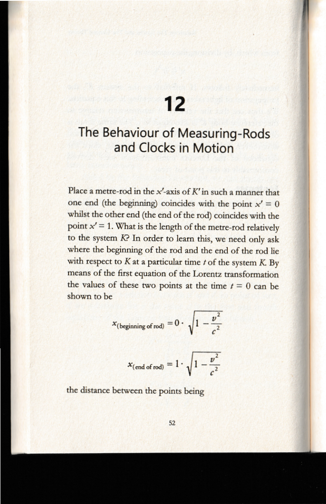
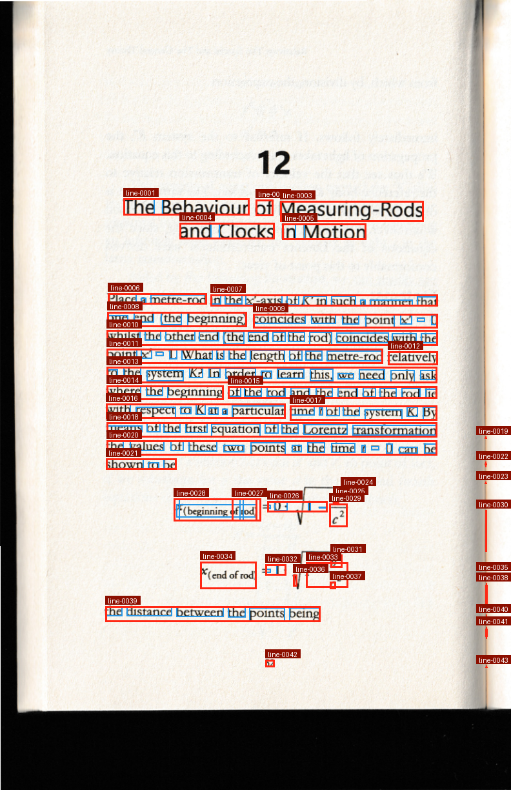
| physical_line_id | OCR locator text | Stable token identities and boxes (px) |
|---|---|---|
| line-0001 | The Behaviour | row 5 / token-0005 [191,307,48,25], row 6 / token-0006 [251,308,135,25] |
| line-0002 | of | row 7 / token-0007 [396,309,27,25] |
| line-0003 | Measuring-Rods | row 8 / token-0008 [434,311,222,32] |
| line-0004 | and Clocks | row 10 / token-0010 [278,345,49,24], row 11 / token-0011 [339,345,86,25] |
| line-0005 | in Motion | row 12 / token-0012 [437,346,21,24], row 13 / token-0013 [471,347,96,24] |
| line-0006 | Place a metre-rod | row 15 / token-0015 [167,454,44,16], row 16 / token-0016 [218,461,8,9], row 17 / token-0017 [233,456,87,15] |
| line-0007 | in the x’-axis of K’in such a manner that | row 18 / token-0018 [326,456,16,15], row 19 / token-0019 [348,456,27,15], row 20 / token-0020 [380,456,57,16], row 21 / token-0021 [444,457,19,15], row 22 / token-0022 [470,458,36,15], row 23 / token-0023 [513,458,38,15], row 24 / token-0024 [558,464,8,9], row 25 / token-0025 [573,464,66,10], row 26 / token-0026 [646,459,32,15] |
| line-0008 | one end (the beginning) | row 28 / token-0028 [166,488,32,10], row 29 / token-0029 [207,483,31,16], row 30 / token-0030 [249,484,32,19], row 31 / token-0031 [290,484,92,22] |
| line-0009 | coincides with the point x’ = 0 | row 32 / token-0032 [392,486,81,15], row 33 / token-0033 [482,486,38,15], row 34 / token-0034 [530,487,26,15], row 35 / token-0035 [566,487,45,21], row 36 / token-0036 [620,487,18,15], row 37 / token-0037 [646,492,12,6], row 38 / token-0038 [668,488,10,15] |
| line-0010 | whilst the other end (the end of the rod) coincides with the | row 40 / token-0040 [165,511,52,16], row 41 / token-0041 [224,512,25,15], row 42 / token-0042 [256,512,46,16], row 43 / token-0043 [308,513,31,15], row 44 / token-0044 [346,513,32,20], row 45 / token-0045 [384,514,32,15], row 46 / token-0046 [422,514,20,15], row 47 / token-0047 [446,514,26,15], row 48 / token-0048 [479,514,35,21], row 49 / token-0049 [521,515,81,16], row 50 / token-0050 [607,516,38,15], row 51 / token-0051 [652,516,26,15] |
| line-0011 | point x’ = 1. What is the length of the metre-rod | row 53 / token-0053 [165,540,47,21], row 54 / token-0054 [218,540,17,15], row 55 / token-0055 [241,545,12,6], row 56 / token-0056 [262,541,12,15], row 57 / token-0057 [281,541,48,16], row 58 / token-0058 [335,541,12,16], row 59 / token-0059 [354,541,27,16], row 60 / token-0060 [387,542,54,21], row 61 / token-0061 [448,542,20,16], row 62 / token-0062 [473,543,26,15], row 63 / token-0063 [506,543,87,16] |
| line-0012 | relatively | row 64 / token-0064 [601,544,77,21] |
| line-0013 | to the system K? In order to learn this, we need only ask | row 66 / token-0066 [165,572,17,12], row 67 / token-0067 [191,568,27,16], row 68 / token-0068 [227,573,57,17], row 69 / token-0069 [293,569,21,16], row 70 / token-0070 [323,570,18,15], row 71 / token-0071 [349,570,47,16], row 72 / token-0072 [404,574,17,12], row 73 / token-0073 [429,571,42,15], row 74 / token-0074 [480,571,36,19], row 75 / token-0075 [523,578,25,9], row 76 / token-0076 [556,572,40,16], row 77 / token-0077 [605,573,37,20], row 78 / token-0078 [651,573,26,15] |
| line-0014 | where the beginning | row 80 / token-0080 [165,597,53,15], row 81 / token-0081 [226,597,26,16], row 82 / token-0082 [259,597,87,22] |
| line-0015 | of the rod and the end of the rod lie | row 83 / token-0083 [353,598,20,16], row 84 / token-0084 [378,599,27,15], row 85 / token-0085 [413,599,29,15], row 86 / token-0086 [450,600,30,15], row 87 / token-0087 [489,600,26,15], row 88 / token-0088 [523,600,31,16], row 89 / token-0089 [562,600,20,15], row 90 / token-0090 [588,601,26,15], row 91 / token-0091 [622,601,29,15], row 92 / token-0092 [659,602,18,15] |
| line-0016 | with respect to K at a particular | row 94 / token-0094 [164,625,38,16], row 95 / token-0095 [210,630,62,17], row 96 / token-0096 [279,630,17,11], row 97 / token-0097 [303,626,15,16], row 98 / token-0098 [323,631,15,11], row 99 / token-0099 [344,633,8,9], row 100 / token-0100 [359,628,83,20] |
| line-0017 | time / of the system K. By | row 101 / token-0101 [449,628,38,15], row 102 / token-0102 [494,631,6,12], row 103 / token-0103 [505,628,21,16], row 104 / token-0104 [531,629,26,15], row 105 / token-0105 [565,634,58,16], row 106 / token-0106 [630,630,17,15], row 107 / token-0107 [655,630,22,21] |
| line-0018 | means of the first equation of the Lorentz transformation | row 109 / token-0109 [165,659,55,10], row 110 / token-0110 [227,654,21,15], row 111 / token-0111 [253,655,26,15], row 112 / token-0112 [287,655,34,15], row 113 / token-0113 [327,656,76,21], row 114 / token-0114 [410,656,21,15], row 115 / token-0115 [436,656,26,16], row 116 / token-0116 [470,657,68,16], row 117 / token-0117 [546,658,131,16] |
| line-0019 | | | row 118 / token-0118 [752,676,1,3] |
| line-0020 | the values of these two points at the time ¢ = 0 can be | row 120 / token-0120 [165,682,26,16], row 121 / token-0121 [201,683,53,15], row 122 / token-0122 [264,683,20,15], row 123 / token-0123 [292,683,44,16], row 124 / token-0124 [346,689,32,11], row 125 / token-0125 [388,685,54,20], row 126 / token-0126 [452,689,15,11], row 127 / token-0127 [476,685,27,16], row 128 / token-0128 [513,686,37,15], row 129 / token-0129 [560,689,6,12], row 130 / token-0130 [575,691,12,6], row 131 / token-0131 [598,687,10,15], row 132 / token-0132 [618,692,29,10], row 133 / token-0133 [657,687,20,15] |
| line-0021 | shown to be | row 135 / token-0135 [164,710,58,16], row 136 / token-0136 [229,716,17,10], row 137 / token-0137 [253,711,20,16] |
| line-0022 | | | row 138 / token-0138 [752,715,1,8] |
| line-0023 | | | row 141 / token-0141 [752,746,1,3] |
| line-0024 | i | row 140 / token-0140 [528,755,12,14] |
| line-0025 | v | row 143 / token-0143 [516,769,9,11] |
| line-0026 | = 9* 4/1 — | row 149 / token-0149 [414,782,5,6], row 150 / token-0150 [425,776,20,15], row 151 / token-0151 [477,776,4,17], row 152 / token-0152 [494,785,13,2] |
| line-0027 | of rod) | row 147 / token-0147 [359,772,13,35], row 148 / token-0148 [376,772,28,35] |
| line-0028 | * (beginning | row 145 / token-0145 [269,772,9,35], row 146 / token-0146 [273,781,125,20] |
| line-0029 | an | row 153 / token-0153 [510,780,28,36] |
| line-0030 | | | row 154 / token-0154 [752,790,2,64] |
| line-0031 | a | row 156 / token-0156 [512,859,18,20] |
| line-0032 | = 1° | row 159 / token-0159 [411,881,8,6], row 160 / token-0160 [428,874,15,17] |
| line-0033 | ee | row 162 / token-0162 [474,871,65,39] |
| line-0034 | Xendofwd | row 158 / token-0158 [310,870,87,42] |
| line-0035 | | | row 163 / token-0163 [753,887,1,11] |
| line-0036 | 4 | row 161 / token-0161 [454,890,6,18] |
| line-0037 | ; | row 165 / token-0165 [511,901,9,11] |
| line-0038 | | | row 166 / token-0166 [753,903,1,39] |
| line-0039 | the distance between the points being | row 168 / token-0168 [163,939,26,15], row 169 / token-0169 [196,939,70,15], row 170 / token-0170 [273,939,73,16], row 171 / token-0171 [353,940,27,16], row 172 / token-0172 [386,941,55,21], row 173 / token-0173 [448,941,48,22] |
| line-0040 | | | row 174 / token-0174 [753,952,1,14] |
| line-0041 | | | row 176 / token-0176 [753,971,1,18] |
| line-0042 | 52 | row 178 / token-0178 [411,1022,14,11] |
| line-0043 | | | row 179 / token-0179 [753,1031,1,3] |
| Overlay | Token ID | Source row | OCR locator | State | Candidate lines |
|---|---|---|---|---|---|
| No residual tokens. | |||||
72 lines · 264 resolved · 0 residual
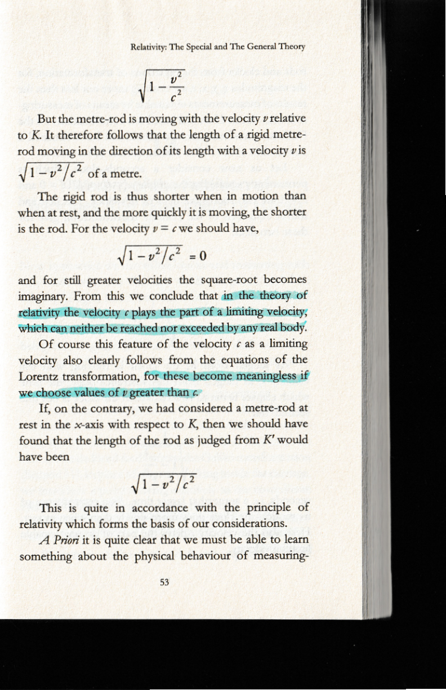
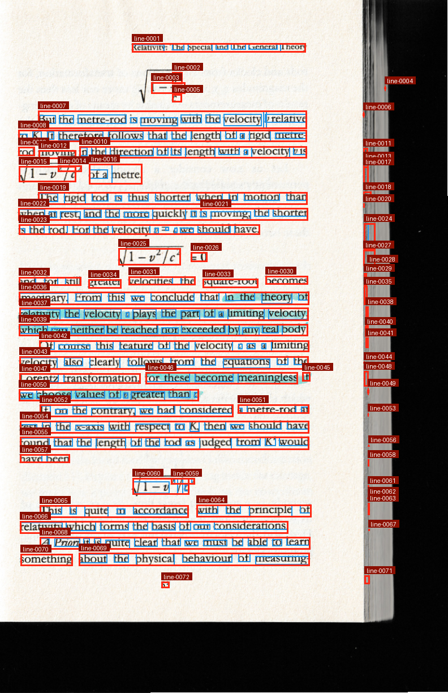
| physical_line_id | OCR locator text | Stable token identities and boxes (px) |
|---|---|---|
| line-0001 | Relativity: The Special and ‘The General Theory | row 5 / token-0005 [233,78,57,14], row 6 / token-0006 [304,77,21,11], row 7 / token-0007 [332,77,43,15], row 8 / token-0008 [381,76,22,11], row 9 / token-0009 [408,77,26,10], row 10 / token-0010 [439,76,51,11], row 11 / token-0011 [495,76,45,15] |
| line-0002 | P | row 13 / token-0013 [304,127,18,21] |
| line-0003 | 1-> | row 15 / token-0015 [267,145,60,20] |
| line-0004 | | | row 16 / token-0016 [680,151,1,9] |
| line-0005 | PP | row 18 / token-0018 [304,166,17,14] |
| line-0006 | | | row 30 / token-0030 [642,197,1,10] |
| line-0007 | But the metre-rod is moving with the velocity » relative | row 20 / token-0020 [67,203,31,15], row 21 / token-0021 [104,203,26,15], row 22 / token-0022 [137,202,86,16], row 23 / token-0023 [230,207,12,10], row 24 / token-0024 [248,207,66,15], row 25 / token-0025 [319,202,37,15], row 26 / token-0026 [363,202,26,15], row 27 / token-0027 [395,201,67,21], row 28 / token-0028 [465,195,6,32], row 29 / token-0029 [468,201,74,15] |
| line-0008 | to K. It therefore follows that the length of a rigid metre- | row 32 / token-0032 [32,236,16,11], row 33 / token-0033 [57,231,16,16], row 34 / token-0034 [83,232,12,14], row 35 / token-0035 [103,231,79,16], row 36 / token-0036 [191,231,62,15], row 37 / token-0037 [262,230,33,16], row 38 / token-0038 [303,230,26,16], row 39 / token-0039 [337,230,53,20], row 40 / token-0040 [398,229,20,16], row 41 / token-0041 [424,235,8,10], row 42 / token-0042 [440,229,38,21], row 43 / token-0043 [486,234,56,11] |
| line-0009 | rod | row 45 / token-0045 [32,259,29,16] |
| line-0010 | in the direction of its length with a velocity vis | row 47 / token-0047 [140,260,14,15], row 48 / token-0048 [161,259,26,16], row 49 / token-0049 [194,259,77,16], row 50 / token-0050 [277,258,20,16], row 51 / token-0051 [302,259,18,15], row 52 / token-0052 [327,258,53,21], row 53 / token-0053 [386,258,37,15], row 54 / token-0054 [431,264,7,9], row 55 / token-0055 [444,258,68,20], row 56 / token-0056 [518,258,24,15] |
| line-0011 | i | row 57 / token-0057 [642,261,8,20] |
| line-0012 | moving | row 46 / token-0046 [68,265,66,15] |
| line-0013 | it | row 60 / token-0060 [642,284,9,12] |
| line-0014 | aia2 | row 59 / token-0059 [102,292,42,11] |
| line-0015 | l—v7/c? | row 62 / token-0062 [33,293,101,28] |
| line-0016 | ofa metre. | row 63 / token-0063 [157,299,33,16], row 64 / token-0064 [197,289,54,36] |
| line-0017 | | | row 65 / token-0065 [642,294,9,32] |
| line-0018 | fy | row 77 / token-0077 [642,338,14,15] |
| line-0019 | The rigid rod is thus shorter when in motion than | row 67 / token-0067 [67,341,35,15], row 68 / token-0068 [113,340,38,21], row 69 / token-0069 [162,340,29,15], row 70 / token-0070 [203,345,12,10], row 71 / token-0071 [227,340,35,15], row 72 / token-0072 [274,340,62,15], row 73 / token-0073 [347,339,46,15], row 74 / token-0074 [404,339,16,15], row 75 / token-0075 [431,339,63,15], row 76 / token-0076 [506,339,37,15] |
| line-0020 | i | row 80 / token-0080 [642,359,2,7] |
| line-0021 | % | row 79 / token-0079 [354,368,2,2] |
| line-0022 | when at rest, and the more quickly it is moving, the shorter | row 82 / token-0082 [32,369,47,15], row 83 / token-0083 [86,373,14,11], row 84 / token-0084 [106,373,36,15], row 85 / token-0085 [148,369,31,15], row 86 / token-0086 [186,369,25,15], row 87 / token-0087 [219,374,44,10], row 88 / token-0088 [269,368,59,21], row 89 / token-0089 [337,372,10,11], row 90 / token-0090 [354,373,11,10], row 91 / token-0091 [372,373,71,16], row 92 / token-0092 [449,367,26,15], row 93 / token-0093 [482,367,62,15] |
| line-0023 | is the rod. For the velocity » = ¢ we should have, | row 95 / token-0095 [33,403,11,10], row 96 / token-0096 [52,397,26,16], row 97 / token-0097 [86,397,33,16], row 98 / token-0098 [128,397,30,15], row 99 / token-0099 [165,397,26,15], row 100 / token-0100 [198,397,67,16], row 101 / token-0101 [273,402,7,10], row 102 / token-0102 [292,401,6,6], row 103 / token-0103 [308,402,5,9], row 104 / token-0104 [318,402,24,9], row 105 / token-0105 [349,396,58,15], row 106 / token-0106 [414,396,45,18] |
| line-0024 | i | | row 107 / token-0107 [643,394,8,46], row 109 / token-0109 [662,414,1,9] |
| line-0025 | J1-0?/c? | row 111 / token-0111 [209,438,110,30] |
| line-0026 | =0 | row 112 / token-0112 [337,445,29,17] |
| line-0027 | qi! | row 113 / token-0113 [642,441,21,28] |
| line-0028 | | | row 115 / token-0115 [649,466,2,8] |
| line-0029 | \ | row 125 / token-0125 [643,482,5,23] |
| line-0030 | becomes | row 124 / token-0124 [469,487,75,15] |
| line-0031 | velocities the | row 121 / token-0121 [227,488,78,15], row 122 / token-0122 [319,488,26,15] |
| line-0032 | and for still | row 117 / token-0117 [33,489,30,15], row 118 / token-0118 [78,489,24,15], row 119 / token-0119 [115,489,28,15] |
| line-0033 | square-root | row 123 / token-0123 [358,492,98,16] |
| line-0034 | greater | row 120 / token-0120 [156,493,58,16] |
| line-0035 | 4 | row 136 / token-0136 [643,505,6,33] |
| line-0036 | imaginary. From this we conclude that inthe theory of | row 127 / token-0127 [33,517,87,21], row 128 / token-0128 [133,517,46,15], row 129 / token-0129 [191,517,29,15], row 130 / token-0130 [232,522,23,10], row 131 / token-0131 [266,516,77,16], row 132 / token-0132 [354,516,33,15], row 133 / token-0133 [398,515,52,16], row 134 / token-0134 [462,515,54,21], row 135 / token-0135 [527,515,19,15] |
| line-0037 | relativity the velocity ¢ plays the part of a limiting velocity, | row 138 / token-0138 [34,546,72,20], row 139 / token-0139 [114,545,26,16], row 140 / token-0140 [148,545,66,21], row 141 / token-0141 [222,551,6,9], row 142 / token-0142 [234,545,42,21], row 143 / token-0143 [285,545,26,15], row 144 / token-0144 [319,548,34,17], row 145 / token-0145 [360,544,20,16], row 146 / token-0146 [386,550,9,10], row 147 / token-0147 [402,544,65,21], row 148 / token-0148 [474,543,71,21] |
| line-0038 | | | row 149 / token-0149 [646,541,5,38] |
| line-0039 | which can neither be reached nor exceeded by any real body. | row 151 / token-0151 [33,574,51,15], row 152 / token-0152 [90,579,29,10], row 153 / token-0153 [125,574,59,15], row 154 / token-0154 [188,573,20,16], row 155 / token-0155 [214,573,65,16], row 156 / token-0156 [285,578,30,11], row 157 / token-0157 [320,572,78,16], row 158 / token-0158 [403,572,20,21], row 159 / token-0159 [428,578,30,15], row 160 / token-0160 [463,572,29,16], row 161 / token-0161 [498,572,46,21] |
| line-0040 | @ | row 162 / token-0162 [645,576,6,18] |
| line-0041 | i | row 175 / token-0175 [646,596,5,18] |
| line-0042 | Of course this feature of the velocity ¢ as a limiting | row 164 / token-0164 [69,602,27,15], row 165 / token-0165 [103,608,56,9], row 166 / token-0166 [170,602,30,15], row 167 / token-0167 [211,602,59,15], row 168 / token-0168 [280,601,20,15], row 169 / token-0169 [308,602,26,15], row 170 / token-0170 [344,601,67,20], row 171 / token-0171 [421,607,7,9], row 172 / token-0172 [436,606,15,10], row 173 / token-0173 [462,606,8,10], row 174 / token-0174 [479,601,67,20] |
| line-0043 | velocity also clearly follows from the equations of the | row 177 / token-0177 [34,631,67,21], row 178 / token-0178 [113,631,33,15], row 179 / token-0179 [158,630,54,21], row 180 / token-0180 [226,630,62,16], row 181 / token-0181 [301,630,42,15], row 182 / token-0182 [355,630,26,15], row 183 / token-0183 [394,633,83,17], row 184 / token-0184 [489,629,20,15], row 185 / token-0185 [519,629,26,15] |
| line-0044 | | | row 186 / token-0186 [643,638,1,3] |
| line-0045 | if | row 193 / token-0193 [534,657,14,16] |
| line-0046 | for'these become meaningless | row 190 / token-0190 [257,658,78,16], row 191 / token-0191 [344,658,68,16], row 192 / token-0192 [420,657,106,21] |
| line-0047 | Lorentz transformation, | row 188 / token-0188 [34,660,69,15], row 189 / token-0189 [112,659,136,18] |
| line-0048 | i | row 194 / token-0194 [643,655,8,27] |
| line-0049 | ! | row 204 / token-0204 [650,685,1,12] |
| line-0050 | we choose values of » greater than ¢ | row 196 / token-0196 [33,693,25,11], row 197 / token-0197 [64,688,62,16], row 198 / token-0198 [133,688,52,15], row 199 / token-0199 [192,687,21,16], row 200 / token-0200 [218,693,8,10], row 201 / token-0201 [231,691,60,17], row 202 / token-0202 [298,687,38,15], row 203 / token-0203 [343,692,8,10] |
| line-0051 | a metre-rod at | row 213 / token-0213 [420,720,8,10], row 214 / token-0214 [436,714,87,16], row 215 / token-0215 [532,718,14,12] |
| line-0052 | If, on the contrary, we had considered | row 206 / token-0206 [70,716,19,18], row 207 / token-0207 [97,722,22,9], row 208 / token-0208 [128,716,25,15], row 209 / token-0209 [161,720,78,16], row 210 / token-0210 [247,721,23,10], row 211 / token-0211 [278,715,31,15], row 212 / token-0212 [318,714,94,16] |
| line-0053 | ] | row 216 / token-0216 [650,729,1,6] |
| line-0054 | rest in the x-axis with respect to K, then we should have | row 218 / token-0218 [35,749,30,11], row 219 / token-0219 [74,745,15,15], row 220 / token-0220 [99,745,25,15], row 221 / token-0221 [133,750,50,10], row 222 / token-0222 [192,744,37,16], row 223 / token-0223 [239,748,61,17], row 224 / token-0224 [309,748,17,11], row 225 / token-0225 [335,744,17,18], row 226 / token-0226 [361,743,38,16], row 227 / token-0227 [407,749,24,9], row 228 / token-0228 [440,743,57,15], row 229 / token-0229 [507,743,39,15] |
| line-0055 | found that the length of the rod as judged from K’ would | row 231 / token-0231 [35,773,52,16], row 232 / token-0232 [95,773,33,15], row 233 / token-0233 [136,773,25,15], row 234 / token-0234 [169,773,53,21], row 235 / token-0235 [231,772,19,16], row 236 / token-0236 [257,773,25,15], row 237 / token-0237 [291,772,29,15], row 238 / token-0238 [328,778,16,9], row 239 / token-0239 [352,772,57,21], row 240 / token-0240 [418,772,42,15], row 241 / token-0241 [468,771,19,16], row 242 / token-0242 [493,771,53,16] |
| line-0056 | ] | row 243 / token-0243 [651,785,1,3] |
| line-0057 | have been | row 245 / token-0245 [35,802,39,15], row 246 / token-0246 [82,802,41,15] |
| line-0058 | j | row 247 / token-0247 [650,811,2,12] |
| line-0059 | 2 2 | row 249 / token-0249 [302,845,7,10], row 250 / token-0250 [338,844,6,11] |
| line-0060 | yl-v / ¢ | row 252 / token-0252 [234,850,65,21], row 253 / token-0253 [313,844,10,29], row 254 / token-0254 [326,856,8,11] |
| line-0061 | / | row 255 / token-0255 [650,857,2,16] |
| line-0062 | | | row 257 / token-0257 [650,876,1,7] |
| line-0063 | 1 | row 268 / token-0268 [650,888,3,21] |
| line-0064 | with the principle of | row 264 / token-0264 [347,892,38,15], row 265 / token-0265 [399,892,26,15], row 266 / token-0266 [440,891,76,22], row 267 / token-0267 [530,891,20,15] |
| line-0065 | This is quite in accordance | row 259 / token-0259 [70,893,39,15], row 260 / token-0260 [123,893,12,15], row 261 / token-0261 [149,893,42,21], row 262 / token-0262 [206,898,15,10], row 263 / token-0263 [235,892,98,16] |
| line-0066 | relativity which forms the basis of our considerations. | row 270 / token-0270 [35,922,75,20], row 271 / token-0271 [116,921,53,16], row 272 / token-0272 [177,921,50,15], row 273 / token-0273 [235,921,26,15], row 274 / token-0274 [268,921,42,15], row 275 / token-0275 [317,920,20,16], row 276 / token-0276 [342,926,29,9], row 277 / token-0277 [378,920,131,15] |
| line-0067 | | | row 278 / token-0278 [651,934,2,2] |
| line-0068 | A Priori it is quite clear that we must be able to learn | row 280 / token-0280 [70,950,17,15], row 281 / token-0281 [96,950,45,15], row 282 / token-0282 [147,950,11,15], row 283 / token-0283 [166,950,12,15], row 284 / token-0284 [186,953,43,17], row 285 / token-0285 [237,949,41,16], row 286 / token-0286 [286,949,33,15], row 287 / token-0287 [326,954,24,10], row 288 / token-0288 [359,953,42,11], row 289 / token-0289 [410,948,19,16], row 290 / token-0290 [438,948,34,16], row 291 / token-0291 [481,952,17,12], row 292 / token-0292 [506,948,42,15] |
| line-0069 | about the physical behaviour of measuring- | row 295 / token-0295 [139,978,50,16], row 296 / token-0296 [201,978,26,15], row 297 / token-0297 [240,977,68,22], row 298 / token-0298 [322,977,88,16], row 299 / token-0299 [421,976,21,16], row 300 / token-0300 [451,982,96,15] |
| line-0070 | something | row 294 / token-0294 [36,978,92,21] |
| line-0071 | \| | row 303 / token-0303 [644,1016,9,15] |
| line-0072 | 53 | row 302 / token-0302 [285,1027,14,11] |
| Overlay | Token ID | Source row | OCR locator | State | Candidate lines |
|---|---|---|---|---|---|
| No residual tokens. | |||||
23 lines · 133 resolved · 0 residual
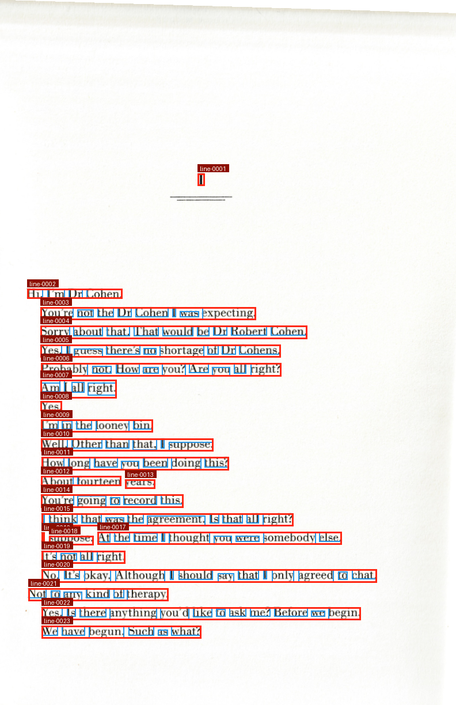
| physical_line_id | OCR locator text | Stable token identities and boxes (px) |
|---|---|---|
| line-0001 | ji | row 5 / token-0005 [343,301,12,21] |
| line-0002 | Hi. I’m Dr Cohen. | row 8 / token-0008 [47,501,27,16], row 9 / token-0009 [82,501,30,16], row 10 / token-0010 [119,501,24,16], row 11 / token-0011 [150,501,62,17] |
| line-0003 | You're not the Dr Cohen I was expecting. | row 14 / token-0014 [70,533,57,17], row 15 / token-0015 [134,537,28,13], row 16 / token-0016 [169,533,28,17], row 17 / token-0017 [204,533,24,17], row 18 / token-0018 [235,533,57,17], row 19 / token-0019 [299,533,6,17], row 20 / token-0020 [312,540,33,10], row 21 / token-0021 [351,534,93,21] |
| line-0004 | Sorry about that. That would be Dr Robert Cohen. | row 24 / token-0024 [70,566,51,22], row 25 / token-0025 [127,566,51,17], row 26 / token-0026 [185,566,40,17], row 27 / token-0027 [232,566,43,17], row 28 / token-0028 [282,566,53,17], row 29 / token-0029 [342,566,21,17], row 30 / token-0030 [370,566,24,16], row 31 / token-0031 [401,566,62,16], row 32 / token-0032 [470,565,63,17] |
| line-0005 | Yes. I guess there’s no shortage of Dr Cohens. | row 35 / token-0035 [70,598,37,17], row 36 / token-0036 [115,598,6,17], row 37 / token-0037 [128,605,50,15], row 38 / token-0038 [184,598,59,17], row 39 / token-0039 [249,604,22,11], row 40 / token-0040 [277,598,77,22], row 41 / token-0041 [360,598,19,17], row 42 / token-0042 [385,598,24,17], row 43 / token-0043 [415,598,72,17] |
| line-0006 | Probably not. How are you? Are you all right? | row 46 / token-0046 [71,631,81,22], row 47 / token-0047 [160,635,33,13], row 48 / token-0048 [201,631,41,17], row 49 / token-0049 [248,637,27,11], row 50 / token-0050 [281,630,41,23], row 51 / token-0051 [328,631,34,16], row 52 / token-0052 [368,637,31,15], row 53 / token-0053 [406,630,21,18], row 54 / token-0054 [435,630,53,23] |
| line-0007 | Am I all right. | row 57 / token-0057 [70,664,34,16], row 58 / token-0058 [103,659,9,32], row 59 / token-0059 [124,663,22,18], row 60 / token-0060 [152,664,50,22] |
| line-0008 | Yes. | row 63 / token-0063 [70,696,37,17] |
| line-0009 | I’m in the looney bin. | row 66 / token-0066 [71,728,30,17], row 67 / token-0067 [107,730,18,15], row 68 / token-0068 [132,729,27,16], row 69 / token-0069 [166,729,58,21], row 70 / token-0070 [231,729,34,16] |
| line-0010 | Well. Other than that, I suppose. | row 73 / token-0073 [71,761,46,17], row 74 / token-0074 [124,761,53,17], row 75 / token-0075 [183,761,41,17], row 76 / token-0076 [230,761,42,20], row 77 / token-0077 [279,761,6,17], row 78 / token-0078 [293,767,77,16] |
| line-0011 | How long have you been doing this? | row 81 / token-0081 [72,794,39,17], row 82 / token-0082 [118,794,38,21], row 83 / token-0083 [163,794,41,17], row 84 / token-0084 [210,800,31,15], row 85 / token-0085 [248,793,43,18], row 86 / token-0086 [297,794,52,22], row 87 / token-0087 [355,793,42,18] |
| line-0012 | About fourteen | row 90 / token-0090 [71,826,56,17], row 91 / token-0091 [134,826,76,17] |
| line-0013 | years. | row 92 / token-0092 [217,832,52,16] |
| line-0014 | You're going to record this. | row 95 / token-0095 [71,858,57,18], row 96 / token-0096 [134,860,50,21], row 97 / token-0097 [191,863,17,13], row 98 / token-0098 [214,859,58,17], row 99 / token-0099 [279,859,39,16] |
| line-0015 | I think that was the agreement. Is that all right? | row 102 / token-0102 [72,891,5,17], row 103 / token-0103 [85,891,49,17], row 104 / token-0104 [141,891,35,17], row 105 / token-0105 [183,898,32,10], row 106 / token-0106 [221,891,28,17], row 107 / token-0107 [255,895,101,18], row 108 / token-0108 [364,891,16,17], row 109 / token-0109 [386,891,35,17], row 110 / token-0110 [428,891,21,17], row 111 / token-0111 [456,891,53,22] |
| line-0016 | I | row 114 / token-0114 [72,924,5,16] |
| line-0017 | At the time I thought you were somebody else. | row 116 / token-0116 [169,924,22,17], row 117 / token-0117 [198,924,27,16], row 118 / token-0118 [232,925,41,15], row 119 / token-0119 [280,924,6,16], row 120 / token-0120 [293,924,71,21], row 121 / token-0121 [371,930,31,15], row 122 / token-0122 [409,930,41,10], row 123 / token-0123 [457,923,91,22], row 124 / token-0124 [554,923,39,17] |
| line-0018 | suppose. | row 115 / token-0115 [85,930,77,16] |
| line-0019 | It’s not all right. | row 127 / token-0127 [72,956,26,17], row 128 / token-0128 [105,960,28,13], row 129 / token-0129 [139,956,22,17], row 130 / token-0130 [168,956,49,22] |
| line-0020 | No. It’s okay. Although I should say that I only agreed to chat. | row 133 / token-0133 [72,989,30,17], row 134 / token-0134 [111,989,27,16], row 135 / token-0135 [146,989,46,22], row 136 / token-0136 [200,989,86,22], row 137 / token-0137 [295,989,6,17], row 138 / token-0138 [310,989,59,17], row 139 / token-0139 [378,995,28,16], row 140 / token-0140 [413,988,36,18], row 141 / token-0141 [457,989,6,16], row 142 / token-0142 [472,989,38,21], row 143 / token-0143 [518,988,61,22], row 144 / token-0144 [587,992,16,14], row 145 / token-0145 [611,988,43,17] |
| line-0021 | Not to any kind of therapy. | row 147 / token-0147 [49,1021,31,17], row 148 / token-0148 [88,1025,16,13], row 149 / token-0149 [110,1027,32,16], row 150 / token-0150 [149,1021,41,17], row 151 / token-0151 [197,1021,18,17], row 152 / token-0152 [220,1022,72,21] |
| line-0022 | Yes. Is there anything you'd like to ask me? Before we begin. | row 155 / token-0155 [72,1054,36,17], row 156 / token-0156 [116,1054,15,16], row 157 / token-0157 [138,1054,46,17], row 158 / token-0158 [190,1054,82,22], row 159 / token-0159 [278,1054,50,22], row 160 / token-0160 [335,1054,33,17], row 161 / token-0161 [375,1057,16,13], row 162 / token-0162 [398,1054,29,16], row 163 / token-0163 [434,1054,35,16], row 164 / token-0164 [476,1054,58,16], row 165 / token-0165 [540,1060,24,10], row 166 / token-0166 [570,1054,56,22] |
| line-0023 | We have begun. Such as what? | row 169 / token-0169 [72,1087,28,16], row 170 / token-0170 [107,1087,40,16], row 171 / token-0171 [154,1086,61,22], row 172 / token-0172 [223,1086,44,17], row 173 / token-0173 [274,1093,17,10], row 174 / token-0174 [297,1086,52,17] |
| Overlay | Token ID | Source row | OCR locator | State | Candidate lines |
|---|---|---|---|---|---|
| No residual tokens. | |||||
44 lines · 233 resolved · 0 residual
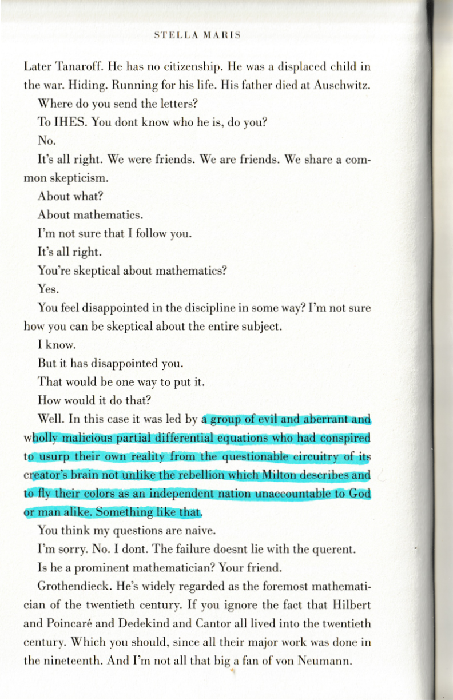
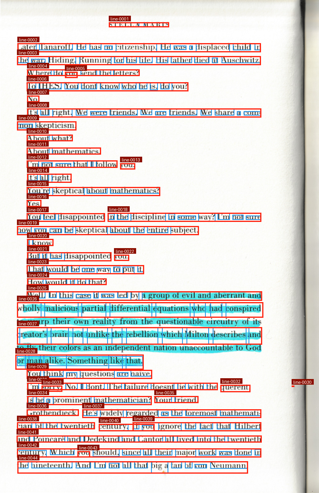
| physical_line_id | OCR locator text | Stable token identities and boxes (px) |
|---|---|---|
| line-0001 | STELLA MARIS | row 5 / token-0005 [270,55,75,12], row 6 / token-0006 [357,55,62,12] |
| line-0002 | Later Tanaroff. He has no citizenship. He was a displaced child in | row 8 / token-0008 [43,107,47,17], row 9 / token-0009 [97,107,83,17], row 10 / token-0010 [190,107,23,16], row 11 / token-0011 [222,107,29,16], row 12 / token-0012 [259,113,20,10], row 13 / token-0013 [287,107,102,22], row 14 / token-0014 [399,107,24,16], row 15 / token-0015 [431,113,31,10], row 16 / token-0016 [470,113,8,10], row 17 / token-0017 [486,107,84,22], row 18 / token-0018 [578,107,44,17], row 19 / token-0019 [632,108,15,16] |
| line-0003 | the war. Hiding. Running for his life. His father died at Auschwitz. | row 21 / token-0021 [42,139,28,17], row 22 / token-0022 [77,146,35,10], row 23 / token-0023 [120,139,68,22], row 24 / token-0024 [197,140,79,21], row 25 / token-0025 [283,139,24,17], row 26 / token-0026 [313,139,26,17], row 27 / token-0027 [346,139,32,17], row 28 / token-0028 [388,139,29,17], row 29 / token-0029 [424,139,52,17], row 30 / token-0030 [482,139,37,17], row 31 / token-0031 [526,143,14,13], row 32 / token-0032 [550,139,97,17] |
| line-0004 | Where do send the letters? | row 35 / token-0035 [67,172,60,16], row 36 / token-0036 [133,172,22,16], row 38 / token-0038 [200,172,40,16], row 39 / token-0039 [247,172,28,16], row 40 / token-0040 [281,172,65,16] |
| line-0005 | you | row 37 / token-0037 [161,178,31,15] |
| line-0006 | To IHES. You dont know who he is, do you? | row 43 / token-0043 [66,204,23,17], row 44 / token-0044 [96,204,56,17], row 45 / token-0045 [160,204,34,17], row 46 / token-0046 [201,204,39,17], row 47 / token-0047 [248,204,48,17], row 48 / token-0048 [302,204,36,17], row 49 / token-0049 [345,204,20,17], row 50 / token-0050 [372,205,19,18], row 51 / token-0051 [398,204,22,17], row 52 / token-0052 [426,204,41,22] |
| line-0007 | No. | row 55 / token-0055 [67,237,30,16] |
| line-0008 | It’s all right. We were friends. We are friends. We share a com- | row 58 / token-0058 [67,269,26,17], row 59 / token-0059 [100,269,22,17], row 60 / token-0060 [130,269,49,22], row 61 / token-0061 [188,269,28,17], row 62 / token-0062 [224,276,41,10], row 63 / token-0063 [272,269,69,17], row 64 / token-0064 [349,269,28,16], row 65 / token-0065 [385,276,27,10], row 66 / token-0066 [420,269,69,17], row 67 / token-0067 [498,270,27,16], row 68 / token-0068 [533,269,48,17], row 69 / token-0069 [588,276,9,10], row 70 / token-0070 [605,276,43,10] |
| line-0009 | mon skepticism. | row 72 / token-0072 [42,307,39,11], row 73 / token-0073 [88,301,101,22] |
| line-0010 | About what? | row 76 / token-0076 [66,334,56,16], row 77 / token-0077 [129,334,51,16] |
| line-0011 | About mathematics. | row 80 / token-0080 [66,366,56,17], row 81 / token-0081 [129,366,121,17] |
| line-0012 | I’m not sure that I follow | row 84 / token-0084 [66,398,30,17], row 85 / token-0085 [103,403,27,13], row 86 / token-0086 [138,405,38,11], row 87 / token-0087 [182,399,35,17], row 88 / token-0088 [225,399,6,16], row 89 / token-0089 [238,399,53,16] |
| line-0013 | you. | row 90 / token-0090 [298,405,37,15] |
| line-0014 | It’s all right. | row 93 / token-0093 [67,431,26,17], row 94 / token-0094 [99,431,22,17], row 95 / token-0095 [128,431,49,22] |
| line-0015 | You're skeptical about mathematics? | row 98 / token-0098 [66,464,57,16], row 99 / token-0099 [130,464,79,22], row 100 / token-0100 [215,464,51,16], row 101 / token-0101 [273,464,124,16] |
| line-0016 | Yes. | row 104 / token-0104 [66,496,36,17] |
| line-0017 | You feel disappointed | row 107 / token-0107 [66,529,35,16], row 108 / token-0108 [107,529,31,16], row 109 / token-0109 [144,529,116,21] |
| line-0018 | in the discipline in some way? I’m not sure | row 110 / token-0110 [267,530,17,15], row 111 / token-0111 [290,529,28,16], row 112 / token-0112 [324,529,87,21], row 113 / token-0113 [418,530,16,15], row 114 / token-0114 [441,535,45,10], row 115 / token-0115 [492,528,42,22], row 116 / token-0116 [540,528,30,17], row 117 / token-0117 [577,533,27,12], row 118 / token-0118 [610,535,38,10] |
| line-0019 | how you can be skeptical about the entire subject. | row 120 / token-0120 [42,561,36,17], row 121 / token-0121 [85,567,30,16], row 122 / token-0122 [123,567,30,11], row 123 / token-0123 [160,561,21,17], row 124 / token-0124 [187,561,80,22], row 125 / token-0125 [273,561,50,17], row 126 / token-0126 [331,561,27,17], row 127 / token-0127 [365,562,52,16], row 128 / token-0128 [423,561,70,22] |
| line-0020 | I know. | row 131 / token-0131 [67,593,6,17], row 132 / token-0132 [80,593,52,17] |
| line-0021 | But it has disappointed | row 135 / token-0135 [67,626,31,16], row 136 / token-0136 [105,627,11,15], row 137 / token-0137 [124,626,29,16], row 138 / token-0138 [159,626,117,22] |
| line-0022 | you. | row 139 / token-0139 [283,632,37,15] |
| line-0023 | ‘That would be one way to put it. | row 142 / token-0142 [66,658,43,17], row 143 / token-0143 [115,658,54,17], row 144 / token-0144 [176,658,21,17], row 145 / token-0145 [203,665,31,10], row 146 / token-0146 [240,665,34,15], row 147 / token-0147 [281,662,17,13], row 148 / token-0148 [304,662,29,18], row 149 / token-0149 [341,659,16,16] |
| line-0024 | How would it do that? | row 152 / token-0152 [67,691,40,16], row 153 / token-0153 [113,691,53,16], row 154 / token-0154 [174,692,11,15], row 155 / token-0155 [192,691,21,16], row 156 / token-0156 [220,691,44,16] |
| line-0025 | Well. In this case it was led by aigroup/oftevillandsaberratitand | row 159 / token-0159 [66,723,46,17], row 160 / token-0160 [121,723,19,16], row 161 / token-0161 [147,723,34,17], row 162 / token-0162 [188,730,37,10], row 163 / token-0163 [232,724,12,16], row 164 / token-0164 [251,729,32,10], row 165 / token-0165 [291,723,26,16], row 166 / token-0166 [324,723,21,22], row 167 / token-0167 [352,723,298,23] |
| line-0026 | wholly malicious partial differential equations who had conspired | row 169 / token-0169 [42,750,60,38], row 170 / token-0170 [110,750,84,38], row 171 / token-0171 [202,750,61,38], row 172 / token-0172 [272,750,105,38], row 173 / token-0173 [386,750,86,38], row 174 / token-0174 [481,750,29,38], row 175 / token-0175 [522,750,29,38], row 176 / token-0176 [560,750,93,38] |
| line-0027 | c reator’s brain not unlike the rebellion which Milton describes and | row 178 / token-0178 [42,827,8,10], row 181 / token-0181 [48,812,69,43], row 182 / token-0182 [126,812,44,43], row 183 / token-0183 [180,812,26,43], row 184 / token-0184 [216,812,51,43], row 185 / token-0185 [277,812,26,43], row 186 / token-0186 [313,812,79,43], row 187 / token-0187 [402,812,51,43], row 188 / token-0188 [463,812,55,43], row 189 / token-0189 [528,812,83,43], row 190 / token-0190 [617,812,33,43] |
| line-0028 | or Something man alike. like that, | row 192 / token-0192 [38,880,25,37], row 195 / token-0195 [42,884,312,24], row 193 / token-0193 [71,880,29,37], row 194 / token-0194 [108,880,57,37], row 196 / token-0196 [269,880,35,37], row 197 / token-0197 [312,880,44,37] |
| line-0029 | You think my questions are naive. | row 200 / token-0200 [66,918,35,17], row 201 / token-0201 [108,918,49,17], row 202 / token-0202 [164,924,27,16], row 203 / token-0203 [198,919,86,21], row 204 / token-0204 [290,924,28,10], row 205 / token-0205 [324,919,53,15] |
| line-0030 | 7 | row 220 / token-0220 [724,957,6,3] |
| line-0031 | I'm No. I dont. The failure doesnt lie with the | row 208 / token-0208 [67,950,29,17], row 210 / token-0210 [162,951,30,16], row 211 / token-0211 [200,951,6,16], row 212 / token-0212 [214,951,45,16], row 213 / token-0213 [266,950,36,17], row 214 / token-0214 [308,950,59,17], row 215 / token-0215 [374,950,58,17], row 216 / token-0216 [440,950,20,17], row 217 / token-0217 [467,951,38,16], row 218 / token-0218 [513,951,27,17] |
| line-0032 | querent. | row 219 / token-0219 [547,955,74,18] |
| line-0033 | sorry. | row 209 / token-0209 [103,957,51,15] |
| line-0034 | Is he a prominent mathematician? | row 223 / token-0223 [67,983,15,17], row 224 / token-0224 [89,983,20,17], row 225 / token-0225 [115,990,9,10], row 226 / token-0226 [131,984,95,21], row 227 / token-0227 [233,983,143,17] |
| line-0035 | Your friend. | row 228 / token-0228 [383,983,43,17], row 229 / token-0229 [433,983,59,17] |
| line-0036 | Grothendieck. | row 232 / token-0232 [66,1016,129,16] |
| line-0037 | He’s widely regarded as the foremost mathemati- | row 233 / token-0233 [204,1016,37,16], row 234 / token-0234 [248,1016,58,21], row 235 / token-0235 [313,1016,80,21], row 236 / token-0236 [400,1022,18,10], row 237 / token-0237 [425,1016,27,16], row 238 / token-0238 [460,1016,78,16], row 239 / token-0239 [546,1016,102,16] |
| line-0038 | cian of the twentieth | row 241 / token-0241 [42,1049,37,16], row 242 / token-0242 [88,1048,19,17], row 243 / token-0243 [114,1048,28,17], row 244 / token-0244 [151,1048,84,17] |
| line-0039 | If ignore the fact that Hilbert | row 246 / token-0246 [329,1048,16,17], row 248 / token-0248 [393,1049,57,21], row 249 / token-0249 [459,1048,27,17], row 250 / token-0250 [496,1048,32,17], row 251 / token-0251 [538,1048,34,17], row 252 / token-0252 [583,1048,65,17] |
| line-0040 | century. you | row 245 / token-0245 [245,1052,73,18], row 247 / token-0247 [352,1055,31,15] |
| line-0041 | and Poincaré and Dedekind and Cantor all lived into the twentieth | row 254 / token-0254 [41,1081,33,16], row 255 / token-0255 [83,1081,78,16], row 256 / token-0256 [167,1081,33,16], row 257 / token-0257 [207,1081,89,16], row 258 / token-0258 [302,1081,33,16], row 259 / token-0259 [343,1081,61,16], row 260 / token-0260 [410,1081,21,16], row 261 / token-0261 [439,1081,42,16], row 262 / token-0262 [489,1082,34,16], row 263 / token-0263 [531,1081,27,17], row 264 / token-0264 [565,1081,84,17] |
| line-0042 | century. Which should, since all their major work was done in | row 266 / token-0266 [42,1117,73,18], row 267 / token-0267 [124,1113,60,16], row 269 / token-0269 [230,1113,66,20], row 270 / token-0270 [303,1114,46,16], row 271 / token-0271 [355,1113,22,17], row 272 / token-0272 [385,1113,42,17], row 273 / token-0273 [435,1114,51,21], row 274 / token-0274 [493,1114,43,16], row 275 / token-0275 [544,1120,31,10], row 276 / token-0276 [582,1114,42,16], row 277 / token-0277 [632,1115,16,15] |
| line-0043 | you | row 268 / token-0268 [192,1120,31,15] |
| line-0044 | the nineteenth. And I’m not all that biga fan of von Neumann. | row 279 / token-0279 [43,1145,27,17], row 280 / token-0280 [78,1146,101,16], row 281 / token-0281 [188,1146,37,16], row 282 / token-0282 [234,1146,28,16], row 283 / token-0283 [270,1149,26,13], row 284 / token-0284 [304,1146,21,16], row 285 / token-0285 [333,1146,33,16], row 286 / token-0286 [375,1146,42,29], row 287 / token-0287 [425,1146,26,16], row 288 / token-0288 [459,1146,18,16], row 289 / token-0289 [483,1152,30,10], row 290 / token-0290 [522,1146,93,17] |
| Overlay | Token ID | Source row | OCR locator | State | Candidate lines |
|---|---|---|---|---|---|
| No residual tokens. | |||||
43 lines · 271 resolved · 0 residual
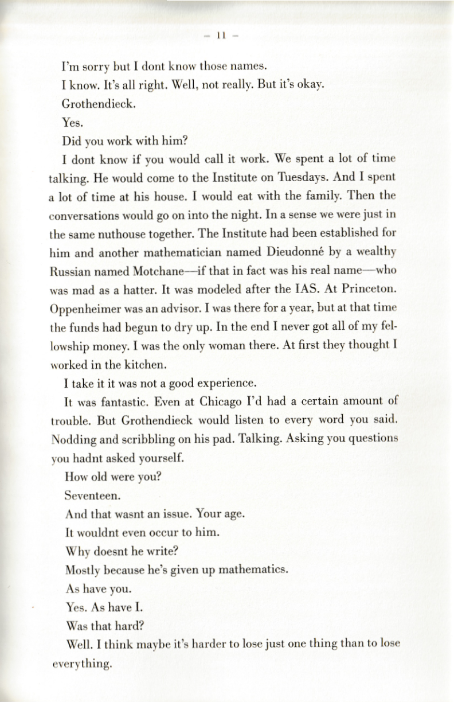
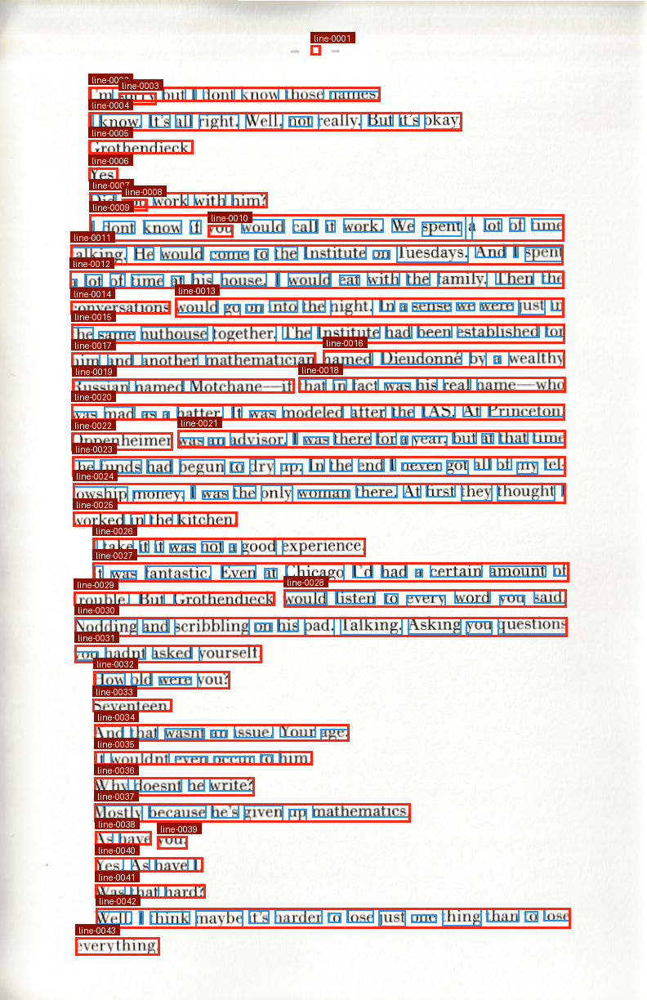
| physical_line_id | OCR locator text | Stable token identities and boxes (px) |
|---|---|---|
| line-0001 | ul | row 5 / token-0005 [380,55,12,12] |
| line-0002 | I'm but I dont know those names. | row 8 / token-0008 [108,107,30,17], row 10 / token-0010 [198,107,29,16], row 11 / token-0011 [235,107,5,16], row 12 / token-0012 [248,106,39,17], row 13 / token-0013 [295,106,46,17], row 14 / token-0014 [349,106,47,16], row 15 / token-0015 [403,111,62,11] |
| line-0003 | sorry | row 9 / token-0009 [145,113,46,15] |
| line-0004 | I know. It’s all right. Well, not really. But it’s okay. | row 18 / token-0018 [108,139,6,17], row 19 / token-0019 [121,139,52,17], row 20 / token-0020 [182,139,26,17], row 21 / token-0021 [214,139,21,17], row 22 / token-0022 [243,139,49,21], row 23 / token-0023 [300,138,46,20], row 24 / token-0024 [353,142,29,13], row 25 / token-0025 [389,137,53,22], row 26 / token-0026 [450,137,31,17], row 27 / token-0027 [488,137,25,17], row 28 / token-0028 [519,137,46,21] |
| line-0005 | Grothendieck. | row 31 / token-0031 [108,171,128,17] |
| line-0006 | Yes. | row 34 / token-0034 [108,205,36,16] |
| line-0007 | Did work with him? | row 37 / token-0037 [109,237,33,17], row 39 / token-0039 [187,236,43,17], row 40 / token-0040 [237,236,39,17], row 41 / token-0041 [283,235,44,18] |
| line-0008 | you | row 38 / token-0038 [149,243,31,15] |
| line-0009 | I dont know if would call it work. We spent a lot of time | row 44 / token-0044 [109,270,6,16], row 45 / token-0045 [126,270,39,16], row 46 / token-0046 [175,269,47,17], row 47 / token-0047 [232,269,14,17], row 49 / token-0049 [295,268,53,17], row 50 / token-0050 [358,268,31,17], row 51 / token-0051 [398,269,12,15], row 52 / token-0052 [420,267,49,17], row 53 / token-0053 [479,267,28,17], row 54 / token-0054 [516,271,49,18], row 55 / token-0055 [569,262,9,33], row 56 / token-0056 [592,267,22,16], row 57 / token-0057 [623,266,19,17], row 58 / token-0058 [650,267,40,15] |
| line-0010 | you | row 48 / token-0048 [254,275,31,15] |
| line-0011 | talking. He would come to the Institute on Tuesdays. And I spent | row 60 / token-0060 [86,302,69,22], row 61 / token-0061 [164,302,24,16], row 62 / token-0062 [196,301,53,17], row 63 / token-0063 [257,307,47,11], row 64 / token-0064 [311,304,17,14], row 65 / token-0065 [336,301,28,17], row 66 / token-0066 [372,300,76,17], row 67 / token-0067 [456,306,21,11], row 68 / token-0068 [485,299,88,22], row 69 / token-0069 [581,299,38,16], row 70 / token-0070 [628,299,6,16], row 71 / token-0071 [642,302,47,18] |
| line-0012 | a lot of time at his house. I would eat with the family. Then the | row 73 / token-0073 [85,341,9,10], row 74 / token-0074 [103,335,22,16], row 75 / token-0075 [134,334,19,17], row 76 / token-0076 [160,335,40,16], row 77 / token-0077 [209,337,16,14], row 78 / token-0078 [234,333,26,17], row 79 / token-0079 [270,333,56,17], row 80 / token-0080 [337,333,5,17], row 81 / token-0081 [352,333,53,17], row 82 / token-0082 [415,336,25,13], row 83 / token-0083 [449,332,40,17], row 84 / token-0084 [497,332,29,17], row 85 / token-0085 [535,331,61,22], row 86 / token-0086 [606,331,47,17], row 87 / token-0087 [663,331,27,16] |
| line-0013 | would go on into the night. In a sense we were just in | row 90 / token-0090 [214,366,53,17], row 91 / token-0091 [274,372,20,16], row 92 / token-0092 [300,372,22,11], row 93 / token-0093 [329,367,35,15], row 94 / token-0094 [370,366,28,16], row 95 / token-0095 [404,365,52,22], row 96 / token-0096 [464,365,19,16], row 97 / token-0097 [489,371,9,10], row 98 / token-0098 [504,370,48,11], row 99 / token-0099 [558,370,23,10], row 100 / token-0100 [587,370,41,10], row 101 / token-0101 [634,365,33,20], row 102 / token-0102 [674,364,16,16] |
| line-0014 | conversations | row 89 / token-0089 [86,368,122,16] |
| line-0015 | the same nuthouse together. The Institute had been established for | row 104 / token-0104 [87,400,27,16], row 105 / token-0105 [120,405,45,11], row 106 / token-0106 [172,399,82,17], row 107 / token-0107 [260,398,78,22], row 108 / token-0108 [345,398,36,17], row 109 / token-0109 [388,398,77,16], row 110 / token-0110 [471,397,33,17], row 111 / token-0111 [510,397,43,16], row 112 / token-0112 [559,396,101,17], row 113 / token-0113 [667,396,24,16] |
| line-0016 | named Dieudonné by a wealthy | row 119 / token-0119 [395,430,61,17], row 120 / token-0120 [466,429,99,17], row 121 / token-0121 [574,429,21,21], row 122 / token-0122 [604,435,9,10], row 123 / token-0123 [622,428,69,22] |
| line-0017 | him and another mathematician | row 115 / token-0115 [87,432,35,17], row 116 / token-0116 [131,432,32,16], row 117 / token-0117 [173,431,69,17], row 118 / token-0118 [251,431,135,17] |
| line-0018 | that in fact was his real nome—who | row 128 / token-0128 [365,463,34,17], row 129 / token-0129 [407,464,17,15], row 130 / token-0130 [431,462,32,17], row 131 / token-0131 [470,468,32,11], row 132 / token-0132 [509,462,26,16], row 133 / token-0133 [542,462,34,16], row 134 / token-0134 [583,461,109,17] |
| line-0019 | Russian named Motchane—if | row 125 / token-0125 [88,465,70,16], row 126 / token-0126 [165,464,60,17], row 127 / token-0127 [233,463,127,17] |
| line-0020 | was mad as a hatter. It was modeled after the IAS. At Princeton. | row 136 / token-0136 [87,503,31,11], row 137 / token-0137 [127,497,38,17], row 138 / token-0138 [173,503,18,10], row 139 / token-0139 [199,503,8,10], row 140 / token-0140 [216,496,57,17], row 141 / token-0141 [283,496,13,17], row 142 / token-0142 [305,502,32,11], row 143 / token-0143 [345,495,75,17], row 144 / token-0144 [429,495,43,17], row 145 / token-0145 [479,495,28,16], row 146 / token-0146 [516,494,41,17], row 147 / token-0147 [566,494,22,16], row 148 / token-0148 [597,494,94,16] |
| line-0021 | was an advisor. I was there for a year, but at that time | row 151 / token-0151 [217,535,32,11], row 152 / token-0152 [254,535,21,10], row 153 / token-0153 [281,528,70,17], row 154 / token-0154 [358,528,6,16], row 155 / token-0155 [371,534,31,10], row 156 / token-0156 [408,528,46,16], row 157 / token-0157 [460,527,25,17], row 158 / token-0158 [490,533,9,11], row 159 / token-0159 [504,533,43,15], row 160 / token-0160 [553,526,30,17], row 161 / token-0161 [589,530,15,13], row 162 / token-0162 [610,526,36,17], row 163 / token-0163 [652,527,40,15] |
| line-0022 | Oppenheimer | row 150 / token-0150 [87,529,124,22] |
| line-0023 | the funds had begun to dry up. In the end I never got all of my fel- | row 165 / token-0165 [88,563,27,16], row 166 / token-0166 [122,562,51,17], row 167 / token-0167 [179,562,32,17], row 168 / token-0168 [219,562,56,21], row 169 / token-0169 [281,565,17,13], row 170 / token-0170 [305,561,31,22], row 171 / token-0171 [343,567,27,16], row 172 / token-0172 [378,560,19,17], row 173 / token-0173 [403,560,28,17], row 174 / token-0174 [438,560,32,17], row 175 / token-0175 [477,560,7,16], row 176 / token-0176 [491,566,49,10], row 177 / token-0177 [546,563,27,18], row 178 / token-0178 [580,559,21,16], row 179 / token-0179 [608,559,18,16], row 180 / token-0180 [632,565,26,15], row 181 / token-0181 [666,558,26,17] |
| line-0024 | lowship money. I was the only woman there. At first they thought I | row 183 / token-0183 [89,595,67,21], row 184 / token-0184 [162,600,63,16], row 185 / token-0185 [233,594,6,16], row 186 / token-0186 [247,600,32,11], row 187 / token-0187 [285,594,28,16], row 188 / token-0188 [319,593,39,22], row 189 / token-0189 [364,599,64,11], row 190 / token-0190 [435,593,51,16], row 191 / token-0191 [493,592,22,17], row 192 / token-0192 [521,592,36,16], row 193 / token-0193 [564,591,38,22], row 194 / token-0194 [608,591,71,22], row 195 / token-0195 [687,591,5,16] |
| line-0025 | worked in the kitchen. | row 197 / token-0197 [89,627,63,17], row 198 / token-0198 [159,628,18,15], row 199 / token-0199 [183,627,28,16], row 200 / token-0200 [217,626,73,17] |
| line-0026 | I take it it was not a good experience. | row 203 / token-0203 [113,660,6,16], row 204 / token-0204 [126,659,37,17], row 205 / token-0205 [170,660,12,16], row 206 / token-0206 [189,660,11,16], row 207 / token-0207 [207,665,32,11], row 208 / token-0208 [246,662,27,14], row 209 / token-0209 [280,665,9,11], row 210 / token-0210 [295,658,43,23], row 211 / token-0211 [345,659,102,21] |
| line-0027 | Tt was fantastic. Even at Chicago I’d had a certain amount of | row 214 / token-0214 [113,692,13,17], row 215 / token-0215 [135,698,32,11], row 216 / token-0216 [177,692,81,17], row 217 / token-0217 [270,691,43,17], row 218 / token-0218 [323,695,16,13], row 219 / token-0219 [349,690,72,22], row 220 / token-0220 [431,690,25,17], row 221 / token-0221 [466,690,32,17], row 222 / token-0222 [508,696,9,10], row 223 / token-0223 [526,690,64,16], row 224 / token-0224 [599,692,69,14], row 225 / token-0225 [677,688,19,17] |
| line-0028 | would listen to every word you said. | row 230 / token-0230 [347,723,53,17], row 231 / token-0231 [410,723,49,16], row 232 / token-0232 [470,726,17,13], row 233 / token-0233 [497,728,48,15], row 234 / token-0234 [556,722,44,16], row 235 / token-0235 [611,728,31,15], row 236 / token-0236 [653,721,40,17] |
| line-0029 | trouble. But Grothendieck | row 227 / token-0227 [90,725,68,16], row 228 / token-0228 [170,724,31,17], row 229 / token-0229 [212,724,124,17] |
| line-0030 | Nodding and scribbling on his pad. Talking. Asking you questions | row 238 / token-0238 [91,757,77,22], row 239 / token-0239 [174,757,33,17], row 240 / token-0240 [213,756,92,22], row 241 / token-0241 [311,762,22,11], row 242 / token-0242 [339,756,26,17], row 243 / token-0243 [372,755,37,23], row 244 / token-0244 [416,755,76,22], row 245 / token-0245 [499,755,65,21], row 246 / token-0246 [570,760,32,16], row 247 / token-0247 [609,755,85,21] |
| line-0031 | you hadnt asked yourself. | row 249 / token-0249 [91,797,29,11], row 250 / token-0250 [128,790,50,17], row 251 / token-0251 [186,789,49,17], row 252 / token-0252 [243,789,77,22] |
| line-0032 | How old were you? | row 255 / token-0255 [114,823,39,16], row 256 / token-0256 [160,822,26,17], row 257 / token-0257 [194,828,40,10], row 258 / token-0258 [241,821,40,22] |
| line-0033 | Seventeen. | row 261 / token-0261 [113,855,97,16] |
| line-0034 | And that wasnt an issue. Your age. | row 264 / token-0264 [115,888,36,16], row 265 / token-0265 [159,887,34,17], row 266 / token-0266 [201,891,49,13], row 267 / token-0267 [257,893,21,10], row 268 / token-0268 [286,887,48,16], row 269 / token-0269 [342,886,44,16], row 270 / token-0270 [392,892,35,15] |
| line-0035 | It wouldnt even occur to him. | row 273 / token-0273 [115,920,12,16], row 274 / token-0274 [135,920,72,16], row 275 / token-0275 [214,925,40,11], row 276 / token-0276 [261,925,50,11], row 277 / token-0277 [318,923,16,12], row 278 / token-0278 [341,919,41,16] |
| line-0036 | Why doesnt he write? | row 281 / token-0281 [115,952,42,22], row 282 / token-0282 [164,952,58,17], row 283 / token-0283 [230,952,20,16], row 284 / token-0284 [256,951,55,17] |
| line-0037 | Mostly because he’s given up mathematics. | row 287 / token-0287 [115,985,59,21], row 288 / token-0288 [181,985,71,16], row 289 / token-0289 [258,984,34,17], row 290 / token-0290 [298,985,48,21], row 291 / token-0291 [353,990,22,15], row 292 / token-0292 [382,983,120,17] |
| line-0038 | As have | row 295 / token-0295 [116,1018,22,16], row 296 / token-0296 [145,1017,40,17] |
| line-0039 | you. | row 297 / token-0297 [192,1023,37,16] |
| line-0040 | Yes. As have I. | row 300 / token-0300 [116,1050,35,17], row 301 / token-0301 [160,1050,23,16], row 302 / token-0302 [189,1049,41,17], row 303 / token-0303 [237,1049,11,17] |
| line-0041 | Was that hard? | row 306 / token-0306 [116,1083,37,16], row 307 / token-0307 [159,1082,35,17], row 308 / token-0308 [201,1082,50,17] |
| line-0042 | Well. I think maybe it’s harder to lose just one thing than to lose | row 311 / token-0311 [117,1115,44,16], row 312 / token-0312 [170,1115,5,16], row 313 / token-0313 [183,1115,49,16], row 314 / token-0314 [239,1114,58,22], row 315 / token-0315 [304,1114,25,16], row 316 / token-0316 [336,1113,58,17], row 317 / token-0317 [401,1117,16,12], row 318 / token-0318 [424,1113,33,16], row 319 / token-0319 [463,1114,33,20], row 320 / token-0320 [503,1119,31,10], row 321 / token-0321 [541,1112,48,21], row 322 / token-0322 [595,1112,40,16], row 323 / token-0323 [642,1115,16,13], row 324 / token-0324 [665,1111,33,16] |
| line-0043 | everything. | row 326 / token-0326 [92,1147,103,22] |
| Overlay | Token ID | Source row | OCR locator | State | Candidate lines |
|---|---|---|---|---|---|
| No residual tokens. | |||||
25 lines · 70 resolved · 0 residual
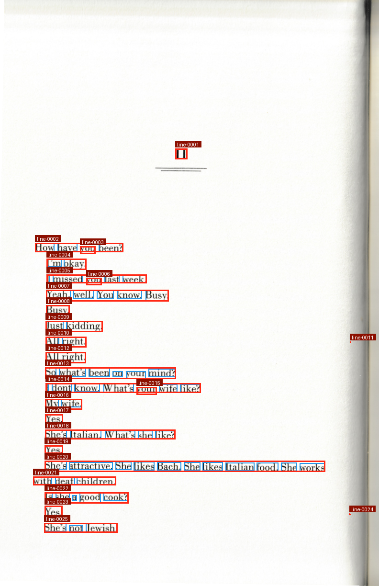
| physical_line_id | OCR locator text | Stable token identities and boxes (px) |
|---|---|---|
| line-0001 | II | row 5 / token-0005 [366,310,25,22] |
| line-0002 | How have been? | row 7 / token-0007 [73,507,40,18], row 8 / token-0008 [120,507,41,18], row 10 / token-0010 [206,508,51,18] |
| line-0003 | you | row 9 / token-0009 [167,514,32,16] |
| line-0004 | T’'m okay. | row 12 / token-0012 [97,540,31,17], row 13 / token-0013 [133,540,47,23] |
| line-0005 | I missed last week. | row 15 / token-0015 [97,573,6,17], row 16 / token-0016 [110,573,63,17], row 18 / token-0018 [218,574,31,17], row 19 / token-0019 [256,574,50,17] |
| line-0006 | you | row 17 / token-0017 [180,580,32,15] |
| line-0007 | Yeah, well. You know. Busy. | row 21 / token-0021 [96,605,51,20], row 22 / token-0022 [153,606,42,17], row 23 / token-0023 [202,606,35,17], row 24 / token-0024 [244,606,52,18], row 25 / token-0025 [304,606,48,23] |
| line-0008 | Busy. | row 27 / token-0027 [96,637,49,23] |
| line-0009 | Just kidding. | row 29 / token-0029 [95,670,37,19], row 30 / token-0030 [138,671,76,22] |
| line-0010 | All right. | row 32 / token-0032 [95,703,28,17], row 33 / token-0033 [130,703,50,22] |
| line-0011 | 1 | row 34 / token-0034 [731,713,2,2] |
| line-0012 | Allright. | row 36 / token-0036 [95,735,84,23] |
| line-0013 | So what’s been on your mind? | row 38 / token-0038 [94,767,23,18], row 39 / token-0039 [123,768,56,18], row 40 / token-0040 [185,768,44,18], row 41 / token-0041 [235,775,21,11], row 42 / token-0042 [263,775,41,16], row 43 / token-0043 [310,770,57,17] |
| line-0014 | I dont know. What’s wife like? | row 45 / token-0045 [95,800,6,17], row 46 / token-0046 [108,800,41,18], row 47 / token-0047 [155,801,53,17], row 48 / token-0048 [216,801,63,18], row 50 / token-0050 [332,802,38,17], row 51 / token-0051 [376,802,43,18] |
| line-0015 | your | row 49 / token-0049 [285,808,42,16] |
| line-0016 | My wife. | row 53 / token-0053 [94,833,28,22], row 54 / token-0054 [128,833,43,17] |
| line-0017 | Yes. | row 56 / token-0056 [94,865,37,18] |
| line-0018 | She’s Italian. What’s she like? | row 58 / token-0058 [94,897,45,18], row 59 / token-0059 [146,898,65,18], row 60 / token-0060 [219,899,63,17], row 61 / token-0061 [288,899,30,17], row 62 / token-0062 [324,899,42,18] |
| line-0019 | Yes. | row 64 / token-0064 [93,930,38,17] |
| line-0020 | She’s attractive. She likes Bach, She likes Italian food. She works | row 66 / token-0066 [93,962,46,18], row 67 / token-0067 [144,965,91,16], row 68 / token-0068 [241,964,33,17], row 69 / token-0069 [279,964,43,18], row 70 / token-0070 [328,965,50,17], row 71 / token-0071 [384,965,34,17], row 72 / token-0072 [423,965,42,18], row 73 / token-0073 [471,966,60,17], row 74 / token-0074 [536,966,45,18], row 75 / token-0075 [587,966,33,18], row 76 / token-0076 [626,967,53,18] |
| line-0021 | with deaf children. | row 78 / token-0078 [69,995,39,17], row 79 / token-0079 [115,995,41,17], row 80 / token-0080 [160,996,82,17] |
| line-0022 | Is she a good cook? | row 82 / token-0082 [93,1028,16,17], row 83 / token-0083 [116,1028,29,17], row 84 / token-0084 [151,1034,9,11], row 85 / token-0085 [166,1029,44,22], row 86 / token-0086 [216,1029,52,17] |
| line-0023 | Yes. | row 88 / token-0088 [93,1056,37,30] |
| line-0024 | ; | row 89 / token-0089 [730,1072,1,3] |
| line-0025 | She’s not Jewish. | row 91 / token-0091 [92,1092,46,18], row 92 / token-0092 [144,1097,29,13], row 93 / token-0093 [179,1093,66,19] |
| Overlay | Token ID | Source row | OCR locator | State | Candidate lines |
|---|---|---|---|---|---|
| No residual tokens. | |||||
40 lines · 137 resolved · 0 residual
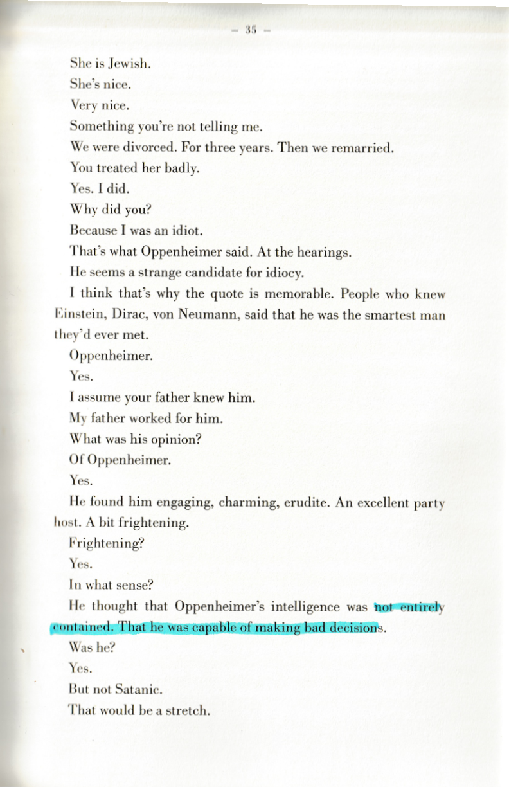
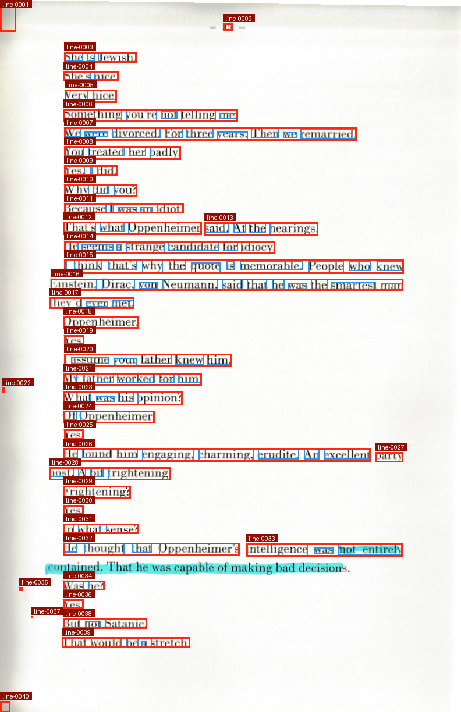
| physical_line_id | OCR locator text | Stable token identities and boxes (px) |
|---|---|---|
| line-0001 | - | row 5 / token-0005 [0,0,27,54] |
| line-0002 | ait | row 6 / token-0006 [383,40,16,12] |
| line-0003 | She is Jewish. | row 9 / token-0009 [110,89,32,16], row 10 / token-0010 [150,90,12,15], row 11 / token-0011 [168,89,66,18] |
| line-0004 | She’s nice. | row 14 / token-0014 [109,122,46,16], row 15 / token-0015 [162,123,41,15] |
| line-0005 | Very nice. | row 18 / token-0018 [111,154,39,22], row 19 / token-0019 [159,155,41,16] |
| line-0006 | Something you're not telling me. | row 22 / token-0022 [109,187,100,21], row 23 / token-0023 [216,187,53,21], row 24 / token-0024 [276,191,28,13], row 25 / token-0025 [311,188,59,21], row 26 / token-0026 [377,194,31,10] |
| line-0007 | We were divorced. For three years. Then we remarried. | row 29 / token-0029 [110,219,28,16], row 30 / token-0030 [145,226,40,9], row 31 / token-0031 [192,219,83,17], row 32 / token-0032 [283,220,30,16], row 33 / token-0033 [319,220,47,16], row 34 / token-0034 [373,226,52,15], row 35 / token-0035 [431,220,48,17], row 36 / token-0036 [486,227,23,10], row 37 / token-0037 [516,221,96,17] |
| line-0008 | You treated her badly. | row 40 / token-0040 [110,251,34,17], row 41 / token-0041 [151,252,63,16], row 42 / token-0042 [221,252,29,16], row 43 / token-0043 [257,252,53,22] |
| line-0009 | Yes. I did. | row 46 / token-0046 [110,284,35,16], row 47 / token-0047 [154,284,5,16], row 48 / token-0048 [166,284,35,17] |
| line-0010 | Why did you? | row 51 / token-0051 [110,316,42,22], row 52 / token-0052 [159,316,28,17], row 53 / token-0053 [195,317,40,21] |
| line-0011 | Because I was an idiot. | row 56 / token-0056 [110,349,72,16], row 57 / token-0057 [189,349,6,17], row 58 / token-0058 [203,355,32,11], row 59 / token-0059 [241,355,20,11], row 60 / token-0060 [269,350,46,16] |
| line-0012 | ‘That’s what Oppenheimer | row 63 / token-0063 [108,381,56,17], row 64 / token-0064 [171,381,42,17], row 65 / token-0065 [220,381,126,22] |
| line-0013 | said. At the hearings. | row 66 / token-0066 [351,382,41,17], row 67 / token-0067 [401,383,21,16], row 68 / token-0068 [428,383,28,16], row 69 / token-0069 [463,383,83,21] |
| line-0014 | He seems a strange candidate for idiocy. | row 72 / token-0072 [110,414,24,16], row 73 / token-0073 [140,420,54,10], row 74 / token-0074 [200,420,9,10], row 75 / token-0075 [216,418,66,18], row 76 / token-0076 [288,414,88,17], row 77 / token-0077 [383,414,25,17], row 78 / token-0078 [414,415,58,21] |
| line-0015 | I think that’s why the quote is memorable. People who knew | row 81 / token-0081 [110,446,4,16], row 82 / token-0082 [127,446,48,17], row 83 / token-0083 [186,446,48,17], row 84 / token-0084 [244,447,35,21], row 85 / token-0085 [290,447,28,16], row 86 / token-0086 [328,451,50,18], row 87 / token-0087 [389,448,13,16], row 88 / token-0088 [412,448,107,16], row 89 / token-0089 [530,448,60,22], row 90 / token-0090 [600,448,36,17], row 91 / token-0091 [647,448,46,17] |
| line-0016 | Kinstein, Dirac, von Neumann, said that he was the smartest man | row 93 / token-0093 [87,479,79,18], row 94 / token-0094 [175,479,56,19], row 95 / token-0095 [238,485,32,11], row 96 / token-0096 [278,479,96,20], row 97 / token-0097 [381,480,35,17], row 98 / token-0098 [424,480,34,17], row 99 / token-0099 [467,480,21,17], row 100 / token-0100 [495,487,32,10], row 101 / token-0101 [534,480,28,17], row 102 / token-0102 [568,484,77,13], row 103 / token-0103 [655,487,37,11] |
| line-0017 | they'd ever met. | row 105 / token-0105 [85,511,55,19], row 106 / token-0106 [147,517,38,10], row 107 / token-0107 [192,515,38,13] |
| line-0018 | Oppenheimer. | row 110 / token-0110 [108,543,129,22] |
| line-0019 | Yes. | row 113 / token-0113 [110,576,34,16] |
| line-0020 | I assume your father knew him. | row 116 / token-0116 [110,608,3,16], row 117 / token-0117 [122,614,65,11], row 118 / token-0118 [195,615,40,15], row 119 / token-0119 [242,609,53,16], row 120 / token-0120 [301,609,48,17], row 121 / token-0121 [356,609,41,17] |
| line-0021 | My father worked for him. | row 124 / token-0124 [109,641,23,21], row 125 / token-0125 [143,641,52,17], row 126 / token-0126 [201,641,65,17], row 127 / token-0127 [273,641,26,17], row 128 / token-0128 [305,642,41,16] |
| line-0022 | | | row 131 / token-0131 [3,666,5,9] |
| line-0023 | What was his opinion? | row 132 / token-0132 [109,673,47,17], row 133 / token-0133 [165,680,31,10], row 134 / token-0134 [203,674,26,16], row 135 / token-0135 [236,674,77,22] |
| line-0024 | Of Oppenheimer. | row 138 / token-0138 [108,706,24,16], row 139 / token-0139 [137,706,128,21] |
| line-0025 | Yes. | row 142 / token-0142 [110,738,33,17] |
| line-0026 | He found him engaging, charming, erudite. An excellent | row 145 / token-0145 [109,771,24,16], row 146 / token-0146 [141,771,51,16], row 147 / token-0147 [201,771,35,16], row 148 / token-0148 [244,772,88,21], row 149 / token-0149 [341,772,94,21], row 150 / token-0150 [443,772,70,17], row 151 / token-0151 [522,772,26,17], row 152 / token-0152 [557,772,79,17] |
| line-0027 | party | row 153 / token-0153 [645,777,47,17] |
| line-0028 | host. A bit frightening. | row 155 / token-0155 [85,803,41,16], row 156 / token-0156 [134,804,13,15], row 157 / token-0157 [155,803,22,16], row 158 / token-0158 [185,803,108,22] |
| line-0029 | Frightening? | row 161 / token-0161 [109,835,115,22] |
| line-0030 | Yes. | row 164 / token-0164 [109,868,34,16] |
| line-0031 | In what sense? | row 167 / token-0167 [109,900,17,16], row 168 / token-0168 [134,901,39,16], row 169 / token-0169 [182,901,56,16] |
| line-0032 | He thought that Oppenheimer’s | row 172 / token-0172 [109,933,23,16], row 173 / token-0173 [144,933,69,21], row 174 / token-0174 [226,933,34,17], row 175 / token-0175 [273,933,138,22] |
| line-0033 | intelligence was norentirely | row 176 / token-0176 [423,934,105,22], row 177 / token-0177 [540,941,32,10], row 178 / token-0178 [581,935,110,19] |
| line-0034 | Was he? | row 182 / token-0182 [108,998,36,16], row 183 / token-0183 [151,998,28,16] |
| line-0035 | . | row 181 / token-0181 [33,1009,5,6] |
| line-0036 | Yes. | row 185 / token-0185 [108,1030,35,16] |
| line-0037 | : | row 187 / token-0187 [54,1059,2,2] |
| line-0038 | But not Satanic. | row 188 / token-0188 [108,1063,28,16], row 189 / token-0189 [146,1067,26,12], row 190 / token-0190 [180,1063,72,17] |
| line-0039 | ‘That would be a stretch, | row 192 / token-0192 [106,1095,41,17], row 193 / token-0193 [156,1096,53,16], row 194 / token-0194 [217,1096,20,16], row 195 / token-0195 [243,1102,9,10], row 196 / token-0196 [259,1096,67,17] |
| line-0040 | 4 | row 198 / token-0198 [0,1205,17,19] |
| Overlay | Token ID | Source row | OCR locator | State | Candidate lines |
|---|---|---|---|---|---|
| No residual tokens. | |||||
{kind=link}
{kind=link}
{kind=link}
{kind=link}
{kind=link}
{kind=link}
{kind=link}
{kind=link}
{kind=link}
{kind=link}
{kind=link}
{kind=link}
{kind=link}
{kind=link}
{kind=link}
{kind=link}
{kind=link}
{kind=link}
{kind=link}
{kind=link}
{kind=link}
{kind=link}